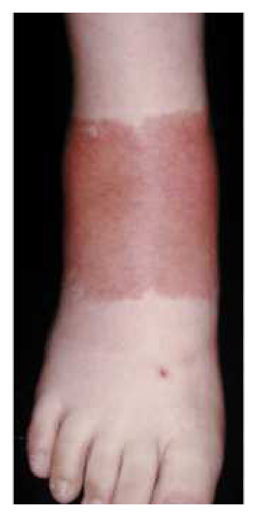
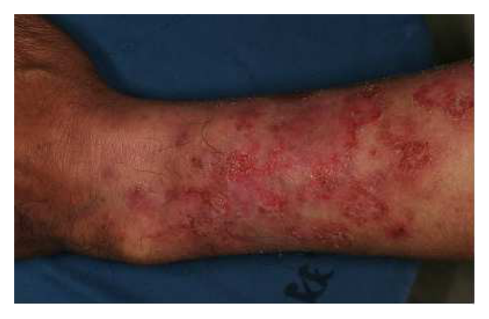
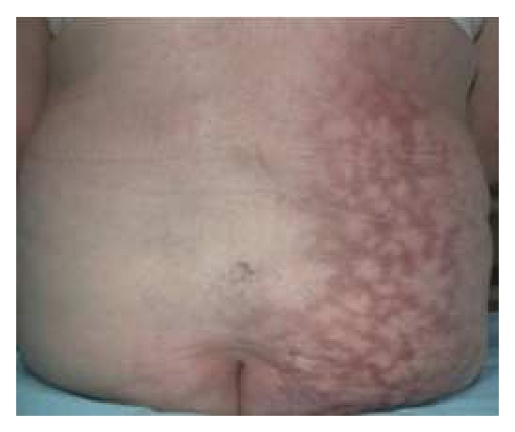
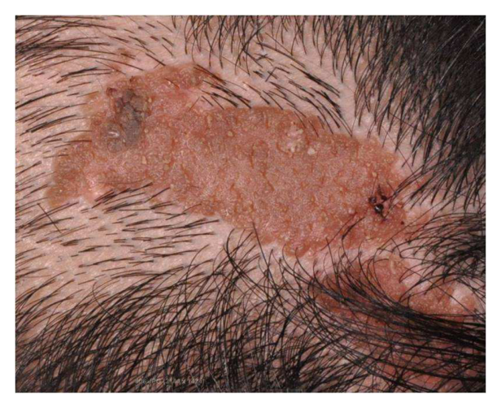
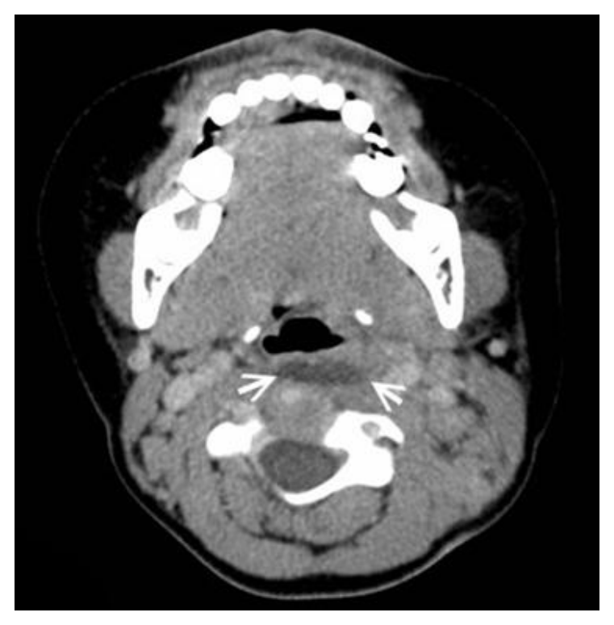

開卷有益 ／
醫師 ／ 醫學（四）（包括小兒科、皮膚科、神經科、精神科等科目及其相關臨床實例與醫學倫理） ／ 107 年第 2 次107 年第 2 次醫師醫學（四）（包括小兒科、皮膚科、神經科、精神科等科目及其相關臨床實例與醫學倫理）試題與答案
這一頁是民國 107 年第 2 次醫師醫學（四）（包括小兒科、皮膚科、神經科、精神科等科目及其相關臨床實例與醫學倫理）的整份歷屆試題，共 80 題，題目與標準答案出自考選部「國家考試試題及測驗式試題答案」開放資料，其中 80 題附有詳解。以下逐題列出題幹、選項與答案；要計時作答或記錄成績，請用線上練習。
考選部原始場次代碼：107080
線上作答這一科 →
全部 80 題
第 1 題
一名5歲男童就診主訴發高燒3天，喉嚨痛、口水直流，媽媽發現男童手上腳上出現許多紅疹。身體診察發現喉嚨軟顎上出現如滿天星般的水泡，手掌、腳掌、臀部也出現如水泡般的疹子，下列敘述何者錯誤？
（A） 這是腸病毒引起的手足口症的典型表現（B） 腸病毒的治療主要是支持性療法（C） 若腸病毒感染併發重症則屬於第三類法定傳染病，須在1週內通報（D） 腸病毒的病情嚴重時用抗病毒藥物Acyclovir來治療，可改善存活率答案：（D）
詳解與考點 正解：軟顎疱疹合併手掌、腳掌與臀部水泡疹，是腸病毒手足口症的典型組合；題目問錯誤敘述，關鍵在腸病毒並非以 acyclovir 治療。Acyclovir 抑制疱疹病毒 DNA 聚合酶，並不針對腸病毒複製；腸病毒重症以嚴密監測與支持性處置為主，故選 D。
A：手足口症常見口腔潰瘍或小水泡，以及手、足、臀部疹子，與題幹相符；病原屬腸病毒，故非答案。
B：多數腸病毒感染採支持性療法，例如維持水分、退燒與疼痛處置，敘述正確。
C：腸病毒感染併發重症屬法定傳染病通報範圍；此選項所述通報規定不是把 acyclovir 當治療的錯誤，故非答案。
本題考點：手足口症（hand-foot-and-mouth disease）常見口腔與四肢末端疱疹；腸病毒感染（enterovirus infection）主要採支持性治療；acyclovir 是抗疱疹病毒藥（anti-herpesvirus agent），不是腸病毒重症標準治療。
第 2 題
9個月大的男嬰高燒5天，今天早上開始呈現嗜睡狀態，晚上因全身僵直陣攣性發作（Generalized tonic clonicseizure）5分鐘被送來急診。在加護病房做了脊髓穿刺檢查，腦脊髓液報告顯示WBC 10000/µL（90% PMNs和10% Lymphocyte），Protein 380 mg/dL，Glucose 5 mg/dL。下列何者為最可能的致病原？
（A） 單純疱疹病毒第一型（HSV type 1）（B） 肺炎鏈球菌（Streptococcus pneumoniae）（C） 腸病毒（Enterovirus）（D） 新型隱球菌（Cryptococcus neoformans）答案：（B）
詳解與考點 正解：高燒、意識改變與痙攣提示急性腦膜炎；腦脊髓液白血球極高且以 PMN 為主、蛋白質高、葡萄糖極低，是細菌性腦膜炎型態。9 個月嬰兒的重要病原為肺炎鏈球菌（Streptococcus pneumoniae），故選 B。
A：HSV-1 可造成腦炎，但腦脊髓液通常較常見淋巴球反應，不典型造成如此低葡萄糖與 PMN 優勢；它看似能解釋痙攣，卻無法最佳解釋本題腦脊髓液型態。
C：腸病毒腦膜炎多為病毒性，較常見淋巴球優勢、葡萄糖正常，與本題不符。
D：新型隱球菌腦膜炎多見於免疫功能低下者，常呈亞急性病程，非大量 PMN 為主。
本題考點：細菌性腦膜炎（bacterial meningitis）常見 PMN 優勢、蛋白質上升與葡萄糖下降；肺炎鏈球菌（Streptococcus pneumoniae）是嬰幼兒重要病原。
第 3 題
1歲半兒童被帶來門診想接受疫苗注射，在他11個月大時，曾因病接受免疫球蛋白（IVIG）的治療。下列何種疫苗之補接種較為適合？
（A） 麻疹－德國麻疹－腮腺炎疫苗（B） 水痘疫苗（C） A型肝炎疫苗（D） 活性日本腦炎疫苗答案：（C）
詳解與考點 正解：曾接受免疫球蛋白（IVIG）是關鍵。被動輸入抗體可中和活性減毒疫苗的病毒而削弱免疫反應；A 型肝炎疫苗為不活化疫苗（inactivated vaccine），不會因 IVIG 而失效，適合作為補接種，故選 C。
A：麻疹－德國麻疹－腮腺炎疫苗（MMR）是活性減毒疫苗，須與 IVIG 間隔足夠時間，故此時不如（C）適切。
B：水痘疫苗也是活性減毒疫苗，可能受 IVIG 中和影響，需考量延後。
D：活性日本腦炎疫苗屬活性疫苗，亦可能受先前 IVIG 影響，不是最適當選擇。
本題考點：免疫球蛋白（intravenous immunoglobulin, IVIG）提供被動免疫；活性減毒疫苗（live attenuated vaccine）可受被動抗體干擾；不活化疫苗（inactivated vaccine）通常不受此影響。
第 4 題
10個月大的男嬰發燒和皮疹已2天。過去健康狀況良好，家人沒有生病。此男嬰精神好，身體診察發現口腔黏膜有潰瘍，頭皮、臉部、耳朵和軀幹有水泡，部分水泡中央凹陷呈肚臍狀。最可能的診斷是：
（A） 手足口症（Hand-foot-and-mouth disease）（B） 猩紅熱（Scarlet fever）（C） 水痘（Varicella）（D） 麻疹（Measles）答案：（C）
詳解與考點 正解：發燒後出現頭皮、臉部、耳朵與軀幹為主的水泡，部分中央凹陷，是水痘（varicella）典型表現。水痘常先自軀幹或頭臉部開始，口腔黏膜也可能有病灶，故選 C。
A：手足口症主要是口腔與手掌、腳掌、臀部疹子；本題病灶分布於頭臉、頭皮與軀幹，不符。
B：猩紅熱為砂紙樣細小紅疹，並非中央凹陷水泡。
D：麻疹常有咳嗽、流鼻水、結膜炎及 Koplik spots，皮疹為斑丘疹而非水泡。
本題考點：水痘（varicella）由水痘帶狀疱疹病毒（varicella-zoster virus）造成；皮疹形態與分布有助區分手足口症、猩紅熱與麻疹。
第 5 題
5歲男孩2天前開始出現發燒、頭痛和喉嚨痛。發燒1天後頸部出現皮疹，接著散佈到軀幹和四肢。其紅色小丘疹感覺像砂紙一樣。病童口腔沒有潰瘍，舌頭呈草莓樣。此病最可能的致病原是：
（A） 第6型人類疱疹病毒（B） 微小病毒B19型（C） 金黃色葡萄球菌（D） A型鏈球菌答案：（D）
詳解與考點 正解：發燒、咽喉痛後出現由頸部擴散的砂紙樣紅疹，加上草莓舌，構成猩紅熱（scarlet fever）的典型表現。猩紅熱由產毒素的 A 型鏈球菌（group A Streptococcus）引起，故選 D。
A：第 6 型人類疱疹病毒常造成玫瑰疹，典型為高燒退後才出疹，非砂紙樣皮疹與草莓舌。
B：微小病毒 B19 常見拍打樣臉頰紅疹及網狀皮疹，臨床圖像不同。
C：金黃色葡萄球菌可造成燙傷樣皮膚症候群，但不以鏈球菌咽喉炎後草莓舌、砂紙樣紅疹為典型。
本題考點：猩紅熱（scarlet fever）與 A 型鏈球菌（group A Streptococcus）毒素有關；砂紙樣皮疹與草莓舌是重要線索。
第 6 題
9個月大的女嬰，發燒咳嗽2天，出現聲音沙啞、咳嗽聲音異常、呼吸費力，來急診就醫，醫師發現有明顯的喘鳴音（Stridor），下列何種處置最不合適？
（A） 給與氧氣吸入治療（B） 給與吸入性腎上腺素治療（C） 給與類固醇治療（D） 給與抗生素注射治療答案：（D）
詳解與考點 正解：聲音沙啞、犬吠樣咳嗽、呼吸費力與吸氣性喘鳴，最符合病毒性哮吼（viral croup）。題目問最不合適處置；哮吼是上呼吸道病毒感染引起黏膜水腫，沒有細菌感染證據時常規注射抗生素無益，故選 D。
A：若有呼吸窘迫或低氧，給氧可改善氧合，是支持性處置。
B：吸入性腎上腺素可暫時減少嚴重哮吼的上呼吸道水腫；它看似只是對症處置，卻能迅速改善喘鳴與呼吸窘迫。
C：類固醇可減輕喉頭下水腫並縮短病程，是重要治療。
本題考點：哮吼（croup）常見犬吠樣咳嗽與吸氣性喘鳴；類固醇（corticosteroid）可治療氣道水腫，嚴重時可使用霧化腎上腺素（nebulized epinephrine）。
第 7 題
下列何者不是足月新生兒會有的正常姿勢？
（A） 平躺時四肢呈屈曲姿勢（B） 俯臥時骨盆會平貼床面（C） 驚嚇時雙手先向外伸張，再作擁抱狀（D） 頭轉向一側，同側手腳呈現伸張姿勢答案：（B）
詳解與考點 正解：題目問足月新生兒「不是」正常姿勢。足月兒屈肌張力高，俯臥時骨盆通常抬離床面；骨盆平貼床面較提示屈肌張力不足，故選 B。
A：足月兒平躺時四肢多屈曲，反映正常屈肌張力，故非答案。
C：驚嚇反射（Moro reflex）先見雙上肢外展伸展，隨後內收如擁抱，是正常原始反射。
D：頭轉向一側時同側肢體伸展、對側屈曲，是不對稱頸張力反射（asymmetric tonic neck reflex）的正常表現。
本題考點：足月新生兒姿勢（term newborn posture）以四肢屈曲為特徵；Moro reflex 與不對稱頸張力反射（asymmetric tonic neck reflex）是正常原始反射。
第 8 題
一個40週出生2,000公克的新生兒，在出生後第2小時出現呼吸喘快、有肋骨下凹陷、全身發紅但嘴唇為紫紅色的現象，體溫脈博正常，檢測血糖值為30 mg/dL。接下來應做何種檢驗最為重要？
（A） C反應蛋白（CRP）（B） 血球血比容（Hematocrit）（C） 心臟超音波（Heart ultrasound）（D） 血液鈉離子濃度（Serum sodium concentration）答案：（B）
詳解與考點 正解：40 週但體重僅 2,000 g，代表足月小於胎齡兒（small for gestational age, SGA）。呼吸窘迫、中央發紺與血糖 30 mg/dL 時，須警覺紅血球增多症（polycythemia）；高血比容會增加血液黏稠度並造成呼吸症狀與低血糖，因此最重要檢驗是血球血比容，故選 B。
A：C 反應蛋白可在懷疑感染時輔助判斷，但本題 SGA 合併低血糖與發紺，優先應查血比容。
C：心臟超音波可評估結構性心臟病；它看似能解釋發紺，卻不能優先排除本題 SGA 相關紅血球增多症。
D：血鈉無法針對此情境最需排除的紅血球增多症提供關鍵資訊。
本題考點：小於胎齡兒（small for gestational age, SGA）易有低血糖（hypoglycemia）與紅血球增多症（polycythemia）；血球血比容（hematocrit）用以評估紅血球增多症。
第 9 題
一個新生兒以真空吸引器輔助娩出後，頭顳葉與枕部發現一腫塊，它摸起來像水袋樣有波動，而且跨越骨縫。身體診察發現前囟門無突出，血壓40/25 mmHg、心跳每分鐘190次，無神經學異常，下列何者為最可能之診斷？
（A） 帽狀腱膜下血腫（Subgaleal hemorrhage）（B） 硬膜上出血（Epidural hemorrhage）（C） 胎頭血腫（Cephalohematoma）（D） 胎頭產瘤（Caput succedaneum）答案：（A）
詳解與考點 正解：真空吸引器分娩後有可跨骨縫、如水袋般波動的頭皮腫塊，加上低血壓與心搏過速，表示腱膜下腔大量出血。帽狀腱膜下血腫（subgaleal hemorrhage）位於可廣泛延伸的腱膜下腔，能跨骨縫且失血量可很大，故選 A。
B：硬膜上出血位於顱內硬膜與顱骨間，不會形成可觸及、跨骨縫的頭皮腫塊。
C：胎頭血腫（cephalohematoma）位於骨膜下，受骨縫限制而不跨骨縫；它看似也是產傷腫塊，卻與題幹關鍵特徵相反。
D：胎頭產瘤（caput succedaneum）雖可跨骨縫，通常是表淺水腫，不會造成顯著低血壓與心搏過速。
本題考點：帽狀腱膜下血腫（subgaleal hemorrhage）與真空吸引分娩相關；跨骨縫腫脹合併休克須警覺大量失血；胎頭血腫（cephalohematoma）不跨骨縫。
第 10 題
一個足月嬰兒出生後哭聲洪亮、四肢活動力好、全身膚色紅潤、心跳大約140/分 、呼吸40/分，抽吸刺激時會有打噴嚏反應，他的Apgar Score為幾分？
（A） 4（B） 6（C） 8（D） 10答案：（D）
詳解與考點 正解：Apgar score 的膚色、心跳、反射刺激反應、肌張力與呼吸各給 0–2 分。全身紅潤為 2 分、心跳 140/分為 2 分、抽吸打噴嚏為 2 分、四肢活動佳為 2 分、哭聲洪亮且呼吸 40/分為 2 分；總分為 2+2+2+2+2=10 分，故選 D。
A：4 分代表多項生理反應不佳，與本題表現不符。
B：6 分需有多項僅得 1 分或 0 分；本題五項皆符合 2 分。
C：8 分常見於僅末梢發紺而膚色項失分；本題明示全身紅潤，沒有扣分條件。
本題考點：Apgar score 評估 Appearance、Pulse、Grimace、Activity、Respiration 五項；每項 0–2 分，滿分 10 分。
第 11 題
下列物質的主要吸收位置，何者不是在十二指腸和近端空腸？
（A） 鈣（Calcium）（B） 鐵（Iron）（C） 葉酸（Folic acid）（D） 膽汁酸（Bile acid）答案：（D）
詳解與考點 正解：題目問主要吸收位置不是十二指腸和近端空腸者。膽汁酸經腸肝循環後，主要在末端迴腸（terminal ileum）主動再吸收，而非近端小腸，故選 D。
A：鈣主要在十二指腸與近端空腸吸收，並受維生素 D 調節，故非答案。
B：鐵以十二指腸及近端空腸為主要吸收部位，敘述符合。
C：葉酸主要在近端小腸，尤其空腸吸收，故非答案。
本題考點：近端小腸吸收（proximal small-intestinal absorption）包括鈣、鐵與葉酸；膽汁酸再吸收（bile acid reabsorption）主要位於末端迴腸（terminal ileum）。
第 12 題
除初乳之外，下列關於母乳（Breast milk）與嬰兒配方（Infant formula）的描述和比較何者最為正確？
（A） 母乳所含的蛋白質濃度較低，嬰兒配方所含的蛋白質濃度較高（B） 母乳所含的脂肪濃度較低，嬰兒配方所含的脂肪濃度較高（C） 母乳中不含維生素A，嬰兒配方則含有維生素A（D） 母乳中不含維生素D，嬰兒配方則含有維生素D答案：（A）
詳解與考點 正解：除初乳外，成熟母乳的蛋白質濃度較嬰兒配方低，且乳清蛋白比例較高，較適合嬰兒消化；配方奶為符合營養與製程需求，蛋白質濃度通常較高，故選 A。
B：母乳與配方的脂肪含量並非可概括為母乳較低、配方較高；母乳脂肪含量會隨哺餵階段與個體變動，此敘述不正確。
C：母乳含有維生素 A，並非完全不含；配方含有維生素 A 不能使前半句成立。
D：母乳含維生素 D 的量通常不足以滿足嬰兒需求，常須補充，但「不含」並不精確；它看似抓到需補充維生素 D 的重點，卻把低含量誤說成完全沒有。
本題考點：母乳（breast milk）蛋白質濃度通常低於嬰兒配方（infant formula）；母乳維生素 D 含量不足（vitamin D insufficiency）與完全不含不同。
第 13 題
關於胃食道逆流（Gastroesophageal reflux）與肥厚性幽門狹窄（Hypertrophic pyloric stenosis）之比較，下列何者正確？
（A） 胃食道逆流沒有男女性別比的差異，肥厚性幽門狹窄則是女生比男生多（B） 胃食道逆流的嬰兒大多會嚴重影響體重增加，肥厚性幽門狹窄未治療大多會嚴重嘔吐甚至脫水（C） 胃食道逆流嬰兒的嘔吐物多不含膽汁，肥厚性幽門狹窄嬰兒的嘔吐物多含有膽汁（D） 胃食道逆流的嬰兒大多隨年齡增長而自行改善，肥厚性幽門狹窄嬰兒確診後需要手術或藥物治療答案：（D）
詳解與考點 正解：胃食道逆流（gastroesophageal reflux）多為嬰兒常見的生理現象，通常隨年齡增長自行改善；肥厚性幽門狹窄（hypertrophic pyloric stenosis）確診後則需解除胃出口阻塞，通常以手術為主，故選 D。
A：肥厚性幽門狹窄較常見於男嬰，不是女生較多，故錯。
B：胃食道逆流多不嚴重影響體重增加；未治療的幽門狹窄可造成持續嘔吐與脫水，前半句錯誤使全句不成立。
C：胃食道逆流與肥厚性幽門狹窄的嘔吐物通常都不含膽汁，因阻塞或逆流位置在十二指腸乳頭近端；將幽門狹窄說成多有膽汁不對。
本題考點：胃食道逆流（gastroesophageal reflux）常隨成熟改善；肥厚性幽門狹窄（hypertrophic pyloric stenosis）典型為非膽汁性嘔吐，需以解除阻塞治療。
第 14 題
關於兒童腸套疊（Intussusception）的表現，下列何者最為典型？
（A） 通常在1至2歲腸套疊的病童，大都可問到在發病前有受到病毒感染，以致於淋巴增生產生引導點（Leadingpoint）（B） 病童多為急性持續性腹痛，中間不停歇，膝蓋彎曲朝向腹部，臉色蒼白表情痛苦（C） 除了腹痛嘔吐和草莓醬樣大便（Currant jelly stool）之外，在病童右上腹可能會摸到硬塊，且在腹痛病程之間可能會有嗜睡的現象（D） 以顯影劑或生理食鹽水或空氣從肛門端導入大腸回灌將腸套疊灌通後，復發的機率為20%以上答案：（C）
詳解與考點 正解：腸套疊（intussusception）典型是陣發性腹痛、嘔吐、草莓醬樣大便，腹部可觸及右上腹腫塊，病童在疼痛間歇可能顯得嗜睡。選項 C 同時呈現這組臨床表現，故選 C。
A：幼兒腸套疊常為特發性，可能與感染後淋巴組織增生相關，但不應把此增生一律視為明確引導點（leading point），敘述過度絕對。
B：腹痛特徵是反覆陣發並有間歇期，不是持續不停歇；屈膝與臉色蒼白可見於疼痛發作，卻不能修正腹痛型態的錯誤。
D：空氣、液體或顯影劑灌腸可同時診斷與復位，確有復發可能，但此選項的復發率敘述不符典型考題判斷，故非答案。
本題考點：腸套疊（intussusception）的典型三徵為陣發腹痛、嘔吐與草莓醬樣大便；灌腸復位（enema reduction）可為診斷兼治療方式。
第 15 題
1個月大的嬰兒到健兒門診接受預防注射，目前全母乳哺餵，身體診察時發現眼白泛黃，胸腹部皮膚呈現黃褐色，詢問大便顏色屬「嬰兒大便辨識卡」5號。下列處置何者最不適當？
（A） 建議停止哺餵母乳，2天後再追蹤黃疸是否下降（B） 檢驗血中直接及總膽紅素值（C） 安排腹部超音波（D） 檢驗γGT（γ-glutamyl transpeptidase）答案：（A）
詳解與考點 正解：1 個月大仍黃疸且嬰兒大便辨識卡為 5 號，須優先排除膽汁鬱積與膽道閉鎖（biliary atresia），不可先把它當作母乳性黃疸而停止母乳。停止哺乳兩天會延誤評估，故最不適當為 A。
B：測定直接及總膽紅素可區分結合型與非結合型高膽紅素血症，是必要的初步檢驗。
C：腹部超音波有助評估肝膽系統與膽囊、膽道異常，屬合理處置。
D：γGT 可協助判讀膽汁鬱積的肝膽酵素型態，故非最不適當。
本題考點：延長性黃疸（prolonged jaundice）合併淡色便須評估膽汁鬱積（cholestasis）；膽道閉鎖（biliary atresia）應及早辨識，不可逕以母乳性黃疸處理。
第 16 題
女童突發四肢無力至急診。血壓100/60 mmHg，血液檢查發現：肌酸酐0.6 mg/dL，鈉離子濃度136mmol/L，鉀離子濃度2.2 mmol/L，滲透壓293 mOsmol/kgH2O。尿液檢查發現：肌酸酐98.5 mg/dL，鈉離子濃度30 mmol/L，鉀離子濃度37 mmol/L，滲透壓370 mOsmol/kgH2O，女童Trans-tubular potassiumgradient（TTKG）數值為何？
（A） 0.075（B） 13.3（C） 9.76（D） 0.1024答案：（B）
詳解與考點 正解：跨腎小管鉀離子梯度（trans-tubular potassium gradient, TTKG）公式為（尿鉀／血鉀）÷（尿滲透壓／血漿滲透壓）。先算尿鉀／血鉀＝37/2.2=16.82；再算尿滲透壓／血漿滲透壓＝370/293=1.26；TTKG=16.82÷1.26=13.3，故選 B。
A：0.075 與正確結果差距極大，並非依 TTKG 公式代入後的值。
C：9.76 不是以尿鉀、血鉀及兩者滲透壓比值完整校正後的結果。
D：0.1024 顯然過低，可能是將不相應的濃度比錯置或倒數處理，故不符。
本題考點：跨腎小管鉀離子梯度（trans-tubular potassium gradient, TTKG）＝（U_K/P_K）÷（U_osm/P_osm）；低血鉀時偏高 TTKG 提示腎臟鉀排泄未適當降低。
第 17 題
臨床上最廣泛使用來估算兒童腎絲球過濾率（Estimated GFR）的公式或指標為何？
（A） Modification of Diet in Renal Disease（MDRD）公式（B） Schwartz formula（C） Cockcroft-Gault equations（D） 血中肌酸酐濃度（Creatinine）答案：（B）
詳解與考點 正解：兒童估算腎絲球過濾率（estimated glomerular filtration rate, eGFR）最廣泛使用的是 Schwartz formula。此公式以身高與血清肌酸酐等兒童相關參數估算，較能反映成長期兒童的腎功能，故選 B。
A：MDRD 公式主要為成人慢性腎臟病族群建立，並非兒科最常用公式。
C：Cockcroft-Gault equations 主要用於成人肌酸酐清除率估計，不適合作為兒童標準 eGFR 公式。
D：血中肌酸酐可作腎功能指標，但受年齡、肌肉量與體型影響，單獨數值不能可靠估算兒童 GFR。
本題考點：Schwartz formula 是兒童腎絲球過濾率估算（pediatric eGFR）的常用公式；血清肌酸酐（serum creatinine）須結合兒童體型與身高解讀。
第 18 題
關於嬰兒搖晃症（Shaken baby syndrome）之成因，下列何者較正確？
（A） 多因坐在嬰兒搖椅造成（B） 多因照顧者搖抱哄睡造成（C） 多因照顧者惡意搖晃造成（D） 多因照顧者與嬰兒玩耍造成答案：（C）
詳解與考點 正解：嬰兒搖晃症（shaken baby syndrome）是非意外傷害（abusive head trauma）的一種，通常由照顧者以暴力、反覆的搖晃動作造成。嬰兒頭部相對大、頸部肌力弱，劇烈加減速可造成顱內傷害，故選 C。
A：一般坐在嬰兒搖椅的活動幅度不足以造成此類暴力性加減速傷害。
B：正常搖抱哄睡並非嬰兒搖晃症的典型成因；關鍵差異在於是否為劇烈且失控的暴力搖晃。
D：一般與嬰兒玩耍不會造成典型嬰兒搖晃症，除非已達虐待性的劇烈搖晃程度。
本題考點：嬰兒搖晃症（shaken baby syndrome）屬非意外傷害（abusive head trauma）；暴力加減速機轉（acceleration-deceleration injury）是造成顱內傷害的核心。
第 19 題
15天大女嬰實驗數值顯示Free T4 0.32 ng/dL（正常值：0.8～2 ng/dL）、T4 2.2 µg/dL（正常值：4.5～12.5µg/dL）、TSH 102 mIU/L（正常值：1.0～15.0 mIU/L），下列敘述何者最正確？
（A） 為甲狀腺功能亢進之個案（B） 這類疾病多為自體隱性遺傳導致（C） 可能與先天性甲狀腺發育不良有關（D） 身體診察可發現女嬰前囟門已癒合答案：（C）
詳解與考點 正解：Free T4 0.32 ng/dL 與 T4 2.2 µg/dL 均低，而 TSH 102 mIU/L 顯著升高，表示甲狀腺本身無法產生足量激素，為原發性先天性甲狀腺功能低下（primary congenital hypothyroidism）。最常見原因之一是甲狀腺發育不良或異位（thyroid dysgenesis），故選 C。
A：甲狀腺功能亢進應見甲狀腺素升高與 TSH 受抑制，和本題完全相反。
B：先天性甲狀腺功能低下多數與甲狀腺發育異常有關，並非多為自體隱性遺傳。
D：甲狀腺功能低下可有前囟門較大或關閉延遲，不會使前囟門已癒合。
本題考點：原發性先天性甲狀腺功能低下（primary congenital hypothyroidism）呈低 T4、高 TSH；甲狀腺發育不良（thyroid dysgenesis）是重要病因；早期辨識可避免神經發育損害。
第 20 題
16歲男學生身體診察顯示側睪丸均為2～3毫升，性釋素刺激試驗顯示睪固酮（Testosterone）＜1.0ng/mL，濾泡促素（FSH）之最高值為89.7 IU/L，黃體促素（LH）之最高值為68.6 IU/L。下列何者最符合病人診斷？
（A） 柯林菲特氏症（Klinefelter syndrome）（B） 卡門氏症（Kallmann syndrome）（C） 普瑞德威利氏症（Prader-Willi syndrome）（D） 先天性腦垂體低能症（Congenital hypopituitarism）答案：（A）
詳解與考點 正解：睪固酮低、性釋素刺激後 FSH 與 LH 顯著升高，代表睪丸原發性功能不全造成的高促性腺激素性性腺低下（hypergonadotropic hypogonadism）。16 歲男生睪丸僅 2～3 ml 且雄性素不足，最符合 47,XXY 的柯林菲特氏症（Klinefelter syndrome），故選 A。
B：卡門氏症（Kallmann syndrome）是下視丘 GnRH 分泌不足，預期 LH、FSH 低或不適當正常，與本題刺激後兩者均高度上升不符。
C：普瑞德威利氏症（Prader-Willi syndrome）可合併中樞性性腺低下，但通常是促性腺激素不足的型態，不能解釋本題顯著升高的 FSH 與 LH。
D：先天性腦垂體低能症（congenital hypopituitarism）會使腦垂體促性腺激素分泌不足；本題腦垂體對性釋素反應強烈，顯示病灶不在腦垂體。
本題考點：高促性腺激素性性腺低下（hypergonadotropic hypogonadism）表示性腺原發性失能；柯林菲特氏症（Klinefelter syndrome）常見小睪丸、睪固酮低及 FSH、LH 升高；中樞性性腺低下（hypogonadotropic hypogonadism）則是 LH、FSH 偏低或不適當正常。
第 21 題
有關川崎氏症（Kawasaki disease）的治療考量，下列何者最為正確？
（A） 以免疫球蛋白（IVIG）2 g/kg為主要之治療（B） 使用高劑量Aspirin（80～100 mg/kg/day）是為了抗凝血作用（C） 使用低劑量Aspirin（3～5 mg/kg/day）是為了抗發炎作用（D） 高燒時需用第三線抗生素以預防感染答案：（A）
詳解與考點 正解：川崎氏症急性期的主要治療。靜脈注射免疫球蛋白（intravenous immunoglobulin, IVIG）2 g/kg 可降低冠狀動脈病變風險，是核心治療，故選 A。
B：高劑量 aspirin 在急性發炎期主要是利用抗發炎作用，不是抗凝血或抗血小板作用；後者主要是低劑量階段的目的。
C：低劑量 aspirin 主要抑制血小板、降低血栓風險，並非為了抗發炎。它看似同樣是 aspirin 而易混淆，但作用目的取決於劑量與病程階段。
D：川崎氏症是血管炎症候群，持續高燒不代表需以第三線抗生素預防感染；抗生素不是其常規治療。
本題考點：川崎氏症（Kawasaki disease）急性期以 IVIG 為主；aspirin 的高劑量用於抗發炎，低劑量用於抗血小板（antiplatelet effect）；治療重點在預防冠狀動脈併發症。
第 22 題
1歲半的幼兒，昨晚發燒、咳嗽，今天到急診。醫師發現呼吸聲音變得明顯，聽診雙側有喘息音（Wheezing），給與短效型支氣管擴張劑（Bronchodilator）後，喘息音沒有改變，下列何種診斷最有可能？
（A） 上呼吸道感染（Upper respiratory tract infection）（B） 細支氣管炎（Bronchiolitis）（C） 氣喘（Asthma）（D） 氣道異物阻塞（Airway foreign body obstruction）答案：（B）
詳解與考點 正解：1 歲半幼兒在上呼吸道感染後出現雙側喘鳴，且給短效支氣管擴張劑後未改善；這是細支氣管炎（bronchiolitis）的典型臨床組合，故選 B。細支氣管炎以病毒造成小氣道發炎、黏液與水腫為主，支氣管擴張劑通常沒有穩定療效。
A：上呼吸道感染可有發燒與咳嗽，但無法充分解釋雙側下呼吸道喘鳴及呼吸聲明顯。
C：氣喘也會喘鳴，因此看似合理；但幼兒急性病毒感染後、首次樣態且對短效支氣管擴張劑無反應，更支持細支氣管炎而非可逆性支氣管收縮。
D：氣道異物阻塞常有突然發作、單側呼吸音下降或局部喘鳴等線索，本題有發燒咳嗽及雙側喘鳴，較不符合。
本題考點：細支氣管炎（bronchiolitis）是嬰幼兒常見的病毒性下呼吸道感染；喘鳴（wheezing）不必然等於氣喘（asthma）；對短效支氣管擴張劑反應不佳可支持細支氣管炎的判斷。
第 23 題
有關預防嬰幼兒過敏的觀念，下列敘述何者最不恰當？
（A） 孕婦飲食不需避免高過敏食物（例如海鮮、花生等）（B） 應延遲添加嬰幼兒副食品至6個月大之後（C） 母乳哺育對於預防氣喘的效果不確定（D） 目前國際指引尚未建議嬰幼兒常規性使用益生菌來預防過敏答案：（B）
詳解與考點 正解：「最不恰當」的嬰幼兒過敏預防觀念。為了預防過敏而將副食品一律延後到 6 個月大後，沒有支持性證據，且可能錯過依發展狀況逐步引介食物的時機，故選 B。嬰兒副食品與過敏預防的建議會隨指引更新，實際引介時機仍須依個別發展與高風險狀況評估。
A：孕期不建議為預防嬰兒過敏而常規避開海鮮、花生等高過敏性食物；無必要限制飲食是合理觀念。
C：母乳哺育有多項健康益處，但對預防日後氣喘的效果未能作出一致定論，因此此敘述並非最不恰當。
D：益生菌菌株、使用時機與研究結果差異很大，並無適用所有嬰幼兒的常規預防過敏建議，故敘述可成立。
本題考點：食物過敏預防（food allergy prevention）不支持無差別延遲副食品；母乳哺育（breastfeeding）的健康益處不等同已確定可預防氣喘；益生菌（probiotics）的預防效果受菌株與族群影響。
第 24 題
兒童嚴重型再生不良性貧血的治療選項中，下列何種治療方式之治癒率較高？
（A） 放射治療（B） 化療（C） 輸血（D） 血液幹細胞移植答案：（D）
詳解與考點 正解：兒童「嚴重型」再生不良性貧血的治癒性治療。血液幹細胞移植（hematopoietic stem cell transplantation）可重建造血功能，對適當候選者是治癒率較高的治療方式，故選 D。
A：放射治療會傷害骨髓造血細胞，不能用來重建再生不良性貧血的造血功能。
B：化療主要用於惡性腫瘤，反而可能抑制骨髓，並非本病的治癒性標準作法。
C：輸血可暫時改善貧血或血小板低下，是支持性治療，卻不能恢復病人自身長期造血功能。
本題考點：嚴重再生不良性貧血（severe aplastic anemia）是骨髓造血衰竭；血液幹細胞移植（hematopoietic stem cell transplantation）可提供治癒機會；輸血（transfusion）屬支持性治療。
第 25 題
一個7天大的新生兒有發紺現象，身體診察聽到分裂的第一心音與第二心音，左側胸骨線出現第三度收縮期的心雜音。胸部X光顯示心臟有擴大情形，心電圖顯示心軸右偏與右心房擴大。此新生兒的診斷較可能是：
（A） 主動脈窄縮（Coarctation of aorta）（B） 左心發育不全症候群（Hypoplastic left heart syndrome）（C） 法洛氏四重症（Tetralogy of Fallot）（D） 艾伯斯坦異常（Ebstein anomaly）答案：（D）
詳解與考點 正解：新生兒發紺、分裂心音、左胸骨緣收縮期雜音、心臟擴大及右心房擴大。艾伯斯坦異常（Ebstein anomaly）為三尖瓣向心尖端位移，造成嚴重三尖瓣逆流與右心房擴大，最符合本題，故選 D。
A：主動脈窄縮（coarctation of aorta）較常以灌流不良、上下肢脈搏或血壓差異表現，不能以右心房擴大與分裂心音作為主要解釋。
B：左心發育不全症候群（hypoplastic left heart syndrome）是左心結構嚴重發育不良，常在動脈導管關閉後出現休克與低灌流，與本題右心房擴大的組合不符。
C：法洛氏四重症（tetralogy of Fallot）可造成發紺及收縮期雜音，但典型影像多非心臟明顯擴大；右心房顯著擴大更指向三尖瓣病變。
本題考點：艾伯斯坦異常（Ebstein anomaly）是三尖瓣位移性畸形；三尖瓣逆流（tricuspid regurgitation）可造成右心房擴大；先天性發紺性心臟病須以心音、雜音、影像及心電圖共同辨別。
第 26 題
下列何者不是胎兒循環轉換為新生兒循環會發生的生理過程？
（A） 動脈導管變成由左至右分流（B） 靜脈導管關閉（C） 卵圓孔變成由右至左分流（D） 臍動脈萎縮關閉答案：（C）
詳解與考點 正解：出生後肺擴張使肺血流增加、左心房壓上升，因此卵圓孔的跨隔壓差由右向左改為左向右，並促使其功能性關閉；它不會變成由右至左分流，故選 C。
A：出生後肺血管阻力下降、體循環阻力上升，動脈導管可暫時出現由左至右分流，之後逐步關閉，屬正常轉換過程。
B：臍靜脈血流停止後，靜脈導管（ductus venosus）會關閉，是正常新生兒循環轉換的一部分。
D：臍帶結紮後，臍動脈失去血流來源而萎縮關閉，也屬正常過程。
本題考點：胎兒循環（fetal circulation）在出生後因肺血管阻力下降而重整；卵圓孔（foramen ovale）由左心房較高壓力促成功能性關閉；動脈導管（ductus arteriosus）可短暫左向右分流後關閉。
第 27 題
單一心室合併肺動脈狹窄（Single ventricle with pulmonary stenosis）之8個月大病童，在病房發現其活力不佳，且有嚴重發紺現象。身體診察發現心跳速率每分鐘40下，血氧濃度40%。下列何種處置不恰當？
（A） 將病患維持Knee-chest position，並給與氧氣（B） 如有嚴重酸中毒，給與Bicarbonate治療（C） 給與Epinephrine急救治療（D） 會診小兒心臟外科醫師評估手術治療介入時機答案：（C）
詳解與考點 正解：官方答案為 C。嚴重發紺時先改善氧合與通氣，並處理酸中毒與肺血流問題；若已完成氧合與通氣處置後，心跳仍低於 60 次/min 且灌流不良，應開始 CPR，epinephrine 屬兒科復甦的適應症。因此只有把（C）理解為未經 ABC 與 CPR 評估便單獨用藥時，才可稱不恰當；題幹未交代復甦流程與灌流狀態，故依官方答案選 C。
A：膝胸臥位（knee-chest position）可提高全身血管阻力、減少右向左分流，給氧亦有助改善缺氧，屬合理立即處置。
B：嚴重酸中毒會增加肺血管阻力並惡化心肌功能；在確認嚴重代謝性酸中毒時矯正酸中毒屬合理處置方向。
D：單一心室合併肺動脈狹窄的長期治療需要依肺血流與發育狀態評估手術或介入時機，會診小兒心臟外科是適當作法。
本題考點：發紺發作（cyanotic spell）先改善氧合、通氣與右向左分流；兒科復甦（pediatric resuscitation）在氧合與通氣後，心跳持續低於 60 次/min 且灌流不良時應 CPR 與 epinephrine；命題須區分發紺發作與復甦適應症。
第 28 題
典型的法洛氏四重症（Tetralogy of Fallot）患者在手術矯正前，胸前聽診時可以聽到一個明顯的收縮期心雜音（Systolic murmur），此雜音的成因為何？
（A） 主動脈跨位（Overriding aorta）造成經過主動脈的血流過多（B） 大型的心室中膈缺損（Ventricular septal defect）造成肺部血流過多（C） 主動脈分出的側枝循環（Collateral circulation）過於旺盛（D） 右心室出口狹窄（Right ventricular outflow tract obstruction）造成血流加速答案：（D）
詳解與考點 正解：未矯正法洛氏四重症的明顯收縮期雜音。雜音主要來自右心室出口狹窄（right ventricular outflow tract obstruction），血液通過狹窄處時流速增加、產生湍流，故選 D。
A：主動脈跨位（overriding aorta）是法洛氏四重症的結構異常之一，但不是收縮期雜音的主要湍流來源。
B：心室中膈缺損（ventricular septal defect）存在時未必有顯著雜音；在法洛氏四重症中，肺血流受右心室出口狹窄限制，並非 VSD 導致肺血流過多。這是最強誘答，因 VSD 常使人聯想到收縮期雜音，但本病的關鍵是肺流出道阻塞。
C：側枝循環不是典型法洛氏四重症收縮期雜音的主要原因。
本題考點：法洛氏四重症（tetralogy of Fallot）包含 VSD、右心室出口狹窄、主動脈跨位與右心室肥厚；收縮期雜音反映右心室出口狹窄（right ventricular outflow tract obstruction）的湍流；狹窄程度影響肺血流與發紺。
第 29 題
關於染色體核型（Karyotyping），下列敘述何者錯誤？
（A） 正常男性染色體核型為46,XY（B） 47,XXY即為Klinefelter syndrome（C） 45,X為女性表徵，病人容易有Premature ovarian failure（D） 46,XY,del(5)(p12)指的是第五號染色體的長臂發生了Deletion答案：（D）
詳解與考點 正解：染色體標記 del(5)(p12) 中的 p 代表短臂（short arm），不是長臂；因此 46,XY,del(5)(p12) 是第五號染色體短臂 p12 區段缺失，選項 D 錯誤，故選 D。
A：正常男性核型寫作 46,XY，表示 46 條染色體且性染色體為 XY，敘述正確，故非答案。
B：47,XXY 是柯林菲特氏症（Klinefelter syndrome）的典型核型，敘述正確，故非答案。
C：45,X 為透納氏症（Turner syndrome）的典型核型，患者表現為女性，並有性腺發育不良及早發性卵巢功能不全風險，敘述正確，故非答案。
本題考點：染色體核型（karyotyping）以 p 表短臂（short arm）、q 表長臂（long arm）；缺失（deletion）需同時辨讀染色體號碼、臂別與區段；47,XXY 與 45,X 分別是常見性染色體異常。
第 30 題
12歲男孩，身高185公分，四肢極為細長。經眼科檢查發現雙側Lens subluxation，下列何種檢查對診斷最無幫助？
（A） Plasma amino acid level（B） Serum homocysteine level（C） Mutation analysis of Marfan Syndrome（D） Muscle biopsy答案：（D）
詳解與考點 正解：高身材、四肢細長與雙側晶狀體半脫位，需鑑別 Marfan syndrome 與 homocystinuria 等結締組織或代謝疾病。肌肉切片（muscle biopsy）不能直接評估這兩個主要鑑別診斷，因此最無幫助，故選 D。
A：血漿胺基酸（plasma amino acid）檢查可協助評估胺基酸代謝異常，對懷疑 homocystinuria 有鑑別價值。
B：血清 homocysteine 升高支持 homocystinuria；其外觀可類似 Marfan syndrome，故是重要鑑別檢查。
C：Marfan syndrome 的基因變異分析可作為診斷評估的一環，與本題表現直接相關。
本題考點：晶狀體半脫位（lens subluxation）須鑑別 Marfan syndrome 與 homocystinuria；homocysteine（同半胱胺酸）及胺基酸檢測可協助代謝性鑑別；肌肉切片（muscle biopsy）不是此臨床組合的主要檢查。
第 31 題
病人發生代謝性酸血症（Metabolic acidosis）合併下列何種臨床情境，則可能為Inborn errors of metabolism的機率最高？
（A） 3週大新生兒，一直嘔吐、無法進食、活力差。血液Anion gap與Lactic acid增加；尿液Ketones 4+（B） 10個月大男嬰持續腹瀉3天。血液呈現氯高而Anion gap正常（C） 3歲大男童高燒5天且食慾差。血液白血球增高（D） 8歲女童多吃、多喝、多尿但體重下降。血糖410 mg/dL，血液呈現Anion gap增加答案：（A）
詳解與考點 正解：3 週大新生兒在無法進食、活力差時出現高 anion gap、乳酸升高與尿酮體 4+。新生兒期的去代償合併高陰離子間隙代謝性酸血症與酮症，最應懷疑先天代謝異常（inborn errors of metabolism），故選 A。
B：持續腹瀉造成的高氯、正常 anion gap 代謝性酸血症，通常是腸道流失 bicarbonate，較不像先天代謝異常。
C：高燒與白血球上升較符合感染引發的發炎反應，題幹沒有提供可支持代謝性酸血症或代謝危象的特徵。
D：多吃、多喝、多尿、體重下降與血糖 410 mg/dL 很像糖尿病酮酸中毒；它同樣可有高 anion gap，卻有明確的高血糖線索可解釋，非最優先的先天代謝異常。
本題考點：先天代謝異常（inborn errors of metabolism）常在新生兒期因禁食或感染去代償；高陰離子間隙代謝性酸血症（high-anion-gap metabolic acidosis）合併乳酸與酮體升高是警訊；正常陰離子間隙高氯性酸血症常見於腹瀉。
第 32 題
4歲男童因有自閉行為（Autistic behavior）而就診，出生時的基本新生兒篩檢及常規染色體檢查並無異常。身體診察顯示頭圍正常、臉型稍長、耳朵大、睪丸體積亦較同年紀男生大。其30歲的媽媽亦因遲遲未能再懷孕，經檢查發現有早發性卵巢衰竭。此男童最有可能患有下列何種疾病？
（A） Asperger syndrome（B） Fragile X syndrome（C） Klinefelter syndrome（D） Tourette syndrome答案：（B）
詳解與考點 正解：男童自閉行為、長臉、大耳及巨睪傾向，且母親有早發性卵巢衰竭；這組合最符合脆折 X 症候群（Fragile X syndrome），故選 B。此病可由 FMR1 前突變在女性帶因者造成早發性卵巢功能不全。
A：Asperger syndrome 可有自閉特質，但不能解釋大耳、巨睪及母親早發性卵巢衰竭的遺傳線索。
C：柯林菲特氏症（Klinefelter syndrome）典型為小而硬的睪丸與青春期後性腺低下，和本題較同齡大睪丸相反。
D：Tourette syndrome 的核心是運動與發聲抽動，並非此題的外觀、睪丸與家族生殖表現組合。
本題考點：脆折 X 症候群（Fragile X syndrome）是常見遺傳性智能與自閉特質原因之一；FMR1 相關疾患（FMR1-related disorders）可見長臉、大耳、巨睪；女性前突變帶因者可有早發性卵巢功能不全（primary ovarian insufficiency）。
第 33 題
下列何種情形可不需立刻通報兒少保護小組？
（A） 4歲男童無法行走，3日後檢查發現右股骨骨折，已是今年第3次外傷就醫（B） 2個月女嬰頭皮血腫合併硬腦膜下出血（C） 4歲男童攀爬遊戲器材時跌落，手腳多處挫傷擦傷（D） 4歲女童據家屬描述走路跌倒後便無法行走，現就醫發現左股骨骨折答案：（C）
詳解與考點 正解：「可不需立刻通報」兒少保護小組。4 歲男童自遊戲器材跌落而有手腳多處挫擦傷，受傷機轉與傷勢部位相符，沒有題幹所示的不一致病史、嬰兒重傷或反覆不明外傷警訊，故選 C。
A：無法行走的幼童有股骨骨折，且一年內已第 3 次因外傷就醫，反覆受傷是非意外傷害（non-accidental injury）警訊，應立即通報評估。
B：2 個月嬰兒出現頭皮血腫合併硬腦膜下出血，嚴重頭部傷害與嬰兒年齡高度可疑，需立即啟動保護評估。
D：4 歲女童僅稱走路跌倒卻有股骨骨折，受傷機轉與傷勢嚴重度不相稱，是需要立即通報的警訊。它看似有家屬提供病史，但病史合理性本身正是判斷重點。
本題考點：兒童不當對待（child maltreatment）須重視傷勢與病史是否相符；非意外傷害（non-accidental injury）的警訊包括反覆外傷、嚴重嬰兒頭傷與不相稱的受傷機轉；通報後由保護團隊進一步評估。
第 34 題
下列何者是濕疹（eczema），在病理下通常不會出現的特徵？
（A） 表皮層出現海綿狀病變（spongiosis）（B） 真皮層血管周圍出現淋巴球和嗜伊紅性球（C） 表皮下出現水疱（subepidermal vesicle）（D） 表皮層出現不規則的棘狀增生變化（irregular acanthosis）答案：（C）
詳解與考點 正解：濕疹（eczema）的典型病理為表皮內海綿狀病變，嚴重時形成的是表皮內小水疱；表皮下水疱（subepidermal vesicle）不是通常特徵，故選 C。
A：海綿狀病變（spongiosis）是濕疹性皮膚炎的代表性表皮變化，敘述正確，故非答案。
B：真皮淺層血管周圍可見以淋巴球為主的發炎浸潤，並可伴嗜伊紅性球，符合濕疹的常見病理表現，故非答案。
D：慢性濕疹可因反覆搔抓與增生出現不規則棘狀增生（irregular acanthosis），不是排除濕疹的特徵。
本題考點：濕疹性皮膚炎（eczematous dermatitis）的核心病理為海綿狀病變（spongiosis）；濕疹水疱多屬表皮內（intraepidermal）變化；表皮下水疱（subepidermal blister）應考慮其他水疱性疾病。
第 35 題
19歲女性，因為腳扭傷而貼敷酸痛藥布，兩天後，出現如圖所示會癢之皮膚病變，下列何種檢查最有助於診斷？

（A） KOH鏡檢（KOH examination）（B） 貼膚試驗（patch test）（C） 針刺試驗（prick test）（D） Tzanck抹片檢查（Tzanck test）答案：（B）
詳解與考點 正解：腳踝扭傷後貼敷酸痛藥布，2天後在藥布接觸範圍出現邊界清楚、發紅發癢的濕疹樣皮疹；圖中病灶的矩形分布亦與藥布覆蓋處相符，最符合過敏性接觸性皮膚炎（allergic contact dermatitis）。此為延遲型過敏反應，貼膚試驗（patch test）可將疑似接觸過敏原貼於皮膚、於適當時間判讀反應，是找出致敏物質最有助的檢查，故選 B。
A：KOH鏡檢（KOH examination）用於尋找皮屑中的真菌菌絲或孢子，適合懷疑皮癬菌感染時；本題皮疹緊貼藥布接觸區的幾何邊界，且在接觸後2天出現搔癢，較支持接觸性皮膚炎而非黴菌感染。
C：針刺試驗（prick test）主要評估立即型過敏反應（immediate hypersensitivity），例如食物、吸入性過敏原或部分藥物引發的蕁麻疹；本題是在接觸藥布後延遲2天形成局限濕疹樣病灶，機轉不符。
D：Tzanck抹片檢查（Tzanck test）可協助辨認皰疹病毒感染或天疱瘡等水疱性疾病的細胞學變化；圖中並無成群水疱或侵蝕，且病灶外形與藥布接觸範圍一致，因此不適用。
本題考點：過敏性接觸性皮膚炎（allergic contact dermatitis）是第IV型延遲型過敏反應（type IV hypersensitivity），常在接觸致敏物後數十小時至數日出現搔癢性濕疹；貼膚試驗（patch test）用於確認接觸性過敏原；病灶依接觸物形成清楚幾何分布是重要線索。
第 36 題
有關太田母斑（nevus of Ota）的敘述，下列何者錯誤？
（A） 好發於臉上三叉神經第三分支部位（B） 可伴隨同側之眼鞏膜黑藍色斑（C） 通常是單側病變（D） 好發於東方女性答案：（A）
詳解與考點 正解：太田母斑（nevus of Ota）的分布。它常沿三叉神經第一、第二分支，也就是眼周、額頭、顴頰區分布，不是第三分支為好發部位，故選 A。
B：太田母斑可合併同側鞏膜的藍黑色色素沉著，敘述正確，故非答案。
C：太田母斑通常為單側病變，敘述正確，故非答案。
D：太田母斑較常見於東方女性，敘述正確，故非答案。
本題考點：太田母斑（nevus of Ota）是皮膚真皮黑色素細胞增生造成的藍灰色色素斑；典型分布在三叉神經第一、第二分支（ophthalmic and maxillary divisions）；可伴同側眼部色素沉著。
第 37 題
關於鋅缺乏（zinc deficiency）引起的皮膚疾病的敘述，下列何者錯誤？
（A） 可為先天性或後天性原因造成鋅缺乏（B） 病人在眼睛、口唇及肛門周圍可見急性濕疹樣皮膚病變（C） 病徵以皮疹表現為主，通常不會有掉髮、腹瀉和昏睡等症狀（D） 血液中鋅和alkaline phosphatase的濃度有助於確診答案：（C）
詳解與考點 正解：鋅缺乏造成的皮膚病不只影響皮膚。腸病性肢端皮膚炎（acrodermatitis enteropathica）或後天性鋅缺乏可有皮疹、掉髮與腹瀉等全身表現，因此稱通常不會有掉髮、腹瀉和昏睡的 C 錯誤，故選 C。
A：鋅缺乏可由先天性鋅吸收障礙或後天性營養不足、吸收不良等原因造成，敘述正確，故非答案。
B：眼睛、口唇與肛門周圍的界線清楚濕疹樣或糜爛性皮疹，是鋅缺乏的典型分布，敘述正確，故非答案。
D：血清鋅濃度及 alkaline phosphatase 可協助評估鋅缺乏；後者是含鋅酵素，敘述正確，故非答案。
本題考點：鋅缺乏（zinc deficiency）可為先天性或後天性；腸病性肢端皮膚炎（acrodermatitis enteropathica）常見腔口周圍皮疹、腹瀉與掉髮；血清鋅與 alkaline phosphatase 可輔助診斷。
第 38 題
20歲女性於六週前，發現前臂出現一微癢紅色斑塊，自行使用藥膏，但皮疹逐漸擴大如圖所示，下列敘述何者錯誤？

（A） 應該使用伍氏燈（Wood's lamp）檢查，若沒有螢光反應，則可以排除體癬的診斷（B） 應詢問是否有養寵物（C） 應進行KOH鏡檢（D） 若皮疹合併有搔抓之小潰瘍，亦要小心是否合併繼發性細菌感染答案：（A）
詳解與考點 正解：圖中前臂可見逐漸向外擴大的紅色環狀斑塊，邊緣較活躍且有鱗屑，中央相對較淡，符合體癬（tinea corporis）的典型形態。伍氏燈（Wood's lamp）陰性不能排除體癬；僅部分皮癬菌感染可能產生螢光，許多造成體癬的皮癬菌並無螢光反應，故錯誤敘述為 A。
B：部分體癬可由貓、狗等寵物傳播，詢問是否飼養寵物有助釐清可能的動物接觸史與感染來源，敘述正確，故非答案。
C：可自活動性鱗屑邊緣刮取檢體進行氫氧化鉀鏡檢（KOH preparation），直接尋找真菌菌絲，是懷疑體癬時合宜的檢查，敘述正確。
D：搔抓造成皮膚屏障破損與小潰瘍時，可能合併繼發性細菌感染（secondary bacterial infection），應評估膿液、疼痛、擴大紅腫等感染徵象，敘述正確。
本題考點：體癬（tinea corporis）常呈離心性擴大的環狀、鱗屑性斑塊；氫氧化鉀鏡檢（KOH preparation）可協助證實皮癬菌感染；伍氏燈（Wood's lamp）陰性不能排除體癬。
第 39 題
關於梅毒的敘述，下列何者正確？
（A） 梅毒螺旋體（Treponema pallidum）可以利用鏡檢與其他nonvenereal diseases的treponemes做鑑別診斷（B） 二期梅毒皮疹經治療後，皮疹通常在4~12週後消褪（C） 二期梅毒皮疹典型發生在chancre出現的3~12週後，但在HIV病患出現的時間可能與chancre有所重疊（D） 血液專一性treponemal test是監測梅毒治療效果的最佳指標本題送分，無標準答案
詳解與考點 本題官方公告送分。
第 40 題
35歲女性主述於2年前，手部遇冷會出現指端變紫黑色的情形，另外也抱怨顏面紅斑及多發性關節痛。最近1年，工作時容易疲勞，實驗室檢查Anti-U1 RNP抗體為1:1280。最可能的診斷為：
（A） 全身性硬化症（systemic sclerosis）（B） 系統性紅斑狼瘡（systemic lupus erythematosus）（C） 皮膚肌炎（dermatomyositis）（D） 混合性結締組織病（mixed connective tissue disease）答案：（D）
詳解與考點 正解：雷諾現象、顏面紅斑、多發性關節痛及高效價 anti-U1 RNP 抗體。這些重疊性結締組織病表現以 anti-U1 RNP 為代表性血清標記，最符合混合性結締組織病（mixed connective tissue disease），故選 D。
A：全身性硬化症（systemic sclerosis）可有雷諾現象，但題幹未見典型皮膚硬化等線索；高效價 anti-U1 RNP 與多種結締組織病表現的組合更支持 MCTD。
B：系統性紅斑狼瘡（systemic lupus erythematosus）可有顏面紅斑與關節痛，因此看似合理；但 anti-U1 RNP 高效價合併雷諾現象和重疊表現是 MCTD 的典型辨識點。
C：皮膚肌炎（dermatomyositis）主要應有近端肌無力與典型皮疹等肌皮表現，本題未提供。
本題考點：混合性結締組織病（mixed connective tissue disease, MCTD）具有重疊性自體免疫表現；anti-U1 RNP antibody 是代表性血清學標記；雷諾現象（Raynaud phenomenon）是常見臨床線索。
第 41 題
Sjogren's syndrome常見的皮膚病變，下列何者錯誤？
（A） cutaneous vasculitis（B） acquired ichthyosis（C） Raynaud phenomenon（D） erythema multiforme答案：（B）
詳解與考點 正解：官方答案為 B。後天性魚鱗癬（acquired ichthyosis）不是 Sjögren's syndrome 的典型皮膚表現，故舊題選 B。惟多形性紅斑（erythema multiforme）或「類多形性紅斑」在現代分類中也非典型常見表現；本題對「常見」的分類口徑未交代，答案唯一性有爭議。
A：皮膚血管炎（cutaneous vasculitis），尤其可觸及性紫斑相關的小血管炎，可見於 Sjögren's syndrome，故非答案。
C：雷諾現象（Raynaud phenomenon）可伴隨 Sjögren's syndrome 或其他結締組織病，故非答案。
D：多形性紅斑（erythema multiforme）可被記載為相關皮膚表現，但並非常見典型表現；若嚴格按「常見」解讀，此選項也是爭點。
本題考點：Sjögren's syndrome 的皮膚表現——皮膚血管炎（cutaneous vasculitis）與雷諾現象（Raynaud phenomenon）可見於結締組織病；後天性魚鱗癬（acquired ichthyosis）與多形性紅斑（erythema multiforme）均須注意其非典型或非普遍性。
第 42 題
曾接受腹部手術後的病人，因腸胃不適，常長期局部熱敷減輕症狀，皮膚出現如圖所示的色素沉著，下列敘述何者正確？

（A） 因為紫外線所引起之黑色素細胞增生（B） 因為患部燙傷起水疱後發炎所留下（C） 患部皮膚可併發皮膚鱗狀上皮細胞癌（D） 繼續局部熱敷可促進色素消散答案：（C）
詳解與考點 正解：長期局部熱敷造成反覆、較低溫度的熱傷害，可形成火烤紅斑（erythema ab igne）。圖中腹部可見網狀、斑駁狀的褐紅色色素沉著，正是其典型外觀。病灶若持續接受熱刺激，少數慢性病灶可出現皮膚惡性變化，包括皮膚鱗狀上皮細胞癌（squamous cell carcinoma），故選 C。
A：紫外線造成的色素增加通常出現在日曬部位，外觀多為較均勻或散在的色素沉著；本題病灶位於反覆熱敷的腹部，且呈現網狀斑駁分布，符合熱源造成的火烤紅斑，而非紫外線引起的黑色素細胞增生。
B：燙傷後水疱與發炎可留下發炎後色素沉著，但通常有明確急性燙傷、水疱或糜爛病史，色素分布也不以圖示的網狀花紋為特徵；本題是長期熱敷造成的慢性熱傷害。
D：繼續熱敷會維持並加重熱傷害，使網狀色素沉著持續，亦可能增加慢性病灶惡性變化的風險；處置重點是停止熱源暴露，而非以熱敷促進色素消散。
本題考點：火烤紅斑（erythema ab igne）是長期、反覆低溫熱源暴露造成的網狀紅褐色色素沉著；慢性熱傷害（chronic thermal injury）病灶應停止熱刺激；皮膚鱗狀上皮細胞癌（squamous cell carcinoma）可為長期慢性皮膚損傷的少見併發症。
第 43 題
下列何者為皮膚角質層主要的脂質成分，且缺少時，與異位性皮膚炎的發生有關？
（A） cholesterol（B） ceramide（C） free fatty acid（D） triglyceride答案：（B）
詳解與考點 正解：「角質層主要脂質成分」合併「缺少與異位性皮膚炎有關」。ceramide 是角質層細胞間脂質的主要成分之一，與膽固醇及游離脂肪酸共同形成層狀脂質屏障；ceramide 減少會使經皮水分散失增加、皮膚屏障受損，與異位性皮膚炎的乾燥與發炎傾向有關，故選 B。
A：cholesterol 雖也是角質層細胞間脂質的組成，卻不是本題所指與異位性皮膚炎屏障缺陷特別相關的核心脂質。它看似合理，因為同樣參與脂質雙層；但臨床與病理常強調的是 ceramide 缺乏。
C：free fatty acid 參與角質層脂質屏障及酸性環境，但不是本題最具代表性的答案；異位性皮膚炎的屏障異常以 ceramide 減少最具辨識性。
D：triglyceride 主要是能量儲存脂質，並非角質層細胞間層狀脂質屏障的主要功能成分，不能解釋本題所述關聯。
本題考點：角質層屏障（stratum corneum barrier）由 ceramide、cholesterol 與游離脂肪酸構成；神經醯胺（ceramide）缺乏會增加經皮水分散失（transepidermal water loss），是異位性皮膚炎（atopic dermatitis）的重要病理機轉。
第 44 題
6歲男孩，在嬰兒時右側頭皮出現一肉色隆起之斑塊如圖所示，隨著時間緩慢變大，最有可能的診斷為何？

（A） seborrheic keratosis（B） sebaceous hyperplasia（C） nevus sebaceous（D） verruca答案：（C）
詳解與考點 正解：圖中右側頭皮可見自嬰兒期即存在、界線清楚的黃橘至肉色、表面顆粒狀隆起斑塊，病灶處毛髮稀少；隨成長緩慢增大，符合皮脂腺痣（nevus sebaceous，亦稱 Jadassohn sebaceous nevus）。此為先天性表皮附屬器錯構瘤，常發生於頭皮或臉部，青春期受荷爾蒙影響可變得較厚、疣狀，故選 C。
A：脂漏性角化症（seborrheic keratosis）多見於成人或老年人，通常是後天出現、表面如貼上的褐色至黑色角化性丘疹或斑塊；不符合嬰兒期即有的頭皮黃橘色少毛斑塊。
B：皮脂腺增生（sebaceous hyperplasia）常見為成人臉部多發、中央可見凹陷的小型黃白色丘疹，並非兒童頭皮上自嬰兒期存在且逐漸擴大的單一隆起斑塊。
D：病毒疣（verruca）由人類乳突病毒（human papillomavirus, HPV）感染引起，通常為後天出現的粗糙角化丘疹或斑塊，可見點狀出血或黑點；其發病時序及圖中黃橘色少毛外觀均不符合。
本題考點：皮脂腺痣（nevus sebaceous）是先天性表皮附屬器錯構瘤，典型為頭皮或臉部的黃橘色、無毛或少毛斑塊；青春期可增厚而呈疣狀外觀；須與後天的脂漏性角化症（seborrheic keratosis）及病毒疣（verruca）鑑別。
第 45 題
承上題，關於此腫瘤之敘述，下列何者錯誤？
（A） 若其顏色及形狀無不規則的變化，只是緩慢變大，可先觀察不需馬上切除（B） 此腫瘤雖然是良性的，但之後仍可能在其上產生基底細胞癌或其他皮膚癌（C） 成年後病灶會自然消失（D） 除了手術切除以外，二氧化碳雷射也是一種治療的選擇答案：（C）
詳解與考點 正解：承上題的嬰幼兒頭皮肉色隆起斑塊為皮脂腺痣（nevus sebaceous）。此為先天性皮脂腺等皮膚附屬器錯構瘤，病灶通常持續存在，可能隨年齡與青春期荷爾蒙變化而變得較厚或疣狀，並不會在成年後自然消失；題目問錯誤敘述，故選 C。
A：皮脂腺痣若外觀穩定、僅緩慢隨生長變大，通常可先追蹤評估，不必因病灶存在就立刻切除；但若出現潰瘍、快速改變或不規則結節，則須重新評估。
B：皮脂腺痣上可發生次發性腫瘤，包含良性附屬器腫瘤及較少見的惡性皮膚腫瘤；因此長期追蹤與外觀改變的判讀有其意義，敘述並非錯誤。
D：治療須依病灶大小、位置與美容需求選擇。手術切除可完整移除病灶；二氧化碳雷射亦可作為處置選項，但要留意深度不足時可能殘留病灶，故此敘述正確。
本題考點：皮脂腺痣（nevus sebaceous）是先天性皮膚附屬器錯構瘤；病灶可隨年齡改變但不會自然消失；次發性腫瘤（secondary neoplasm）的風險使外觀改變成為追蹤重點。
第 46 題
當發生腦血管阻塞後，腦細胞會發生缺血連鎖反應（ischemic cascade）；下列反應順序何者為最正確？①細胞去極化（depolarization） ②鈉鉀離子能量系統瓦解（sodium/potassium ATP pump failure） ③細胞內的鈣離子增加，活化細胞內酵素，溶解胞器（apoptosis） ④釋放興奮性神經傳遞物質，如麩胺酸（glutamate）
（A） ②→①→④→③（B） ①→②→③→④（C） ①→③→④→②（D） ②→③→①→④答案：（A）
詳解與考點 正解：腦缺血後的缺血連鎖反應（ischemic cascade）先後順序。血流阻塞使氧與葡萄糖供應中斷，ATP 不足先造成鈉鉀幫浦失效（②）；離子梯度崩解後細胞膜去極化（①）；接著釋放麩胺酸等興奮性神經傳遞物質（④），造成興奮毒性並使細胞內鈣離子上升、活化破壞性酵素與細胞死亡路徑（③）。順序為②→①→④→③，故選 A。
B：此順序把去極化放在鈉鉀幫浦失效之前，倒置了能源耗竭與膜電位失控的因果；且鈣離子介導傷害應發生在興奮性傳遞物質釋放之後。
C：此順序一開始就跳到鈣離子相關細胞傷害，忽略 ATP 耗竭、幫浦失效與去極化這些上游事件，因果鏈不完整。
D：此順序雖以幫浦失效開始，但在去極化與麩胺酸釋放之前就安排細胞內鈣增加，與興奮毒性（excitotoxicity）的典型流程不符。
本題考點：缺血連鎖反應（ischemic cascade）由 ATP depletion 引起 sodium/potassium ATP pump failure 與 depolarization；興奮毒性（excitotoxicity）中 glutamate 促進鈣離子內流；細胞內鈣離子上升會活化多種酵素並造成神經細胞損傷。
第 47 題
因長期高血壓造成的腦出血，以下何者為最常見的部位？
（A） 殼核（putamen）（B） 額葉（frontal lobe）（C） 橋腦（pons）（D） 小腦（cerebellum）答案：（A）
詳解與考點 正解：「長期高血壓造成的腦出血」。慢性高血壓會使深部穿通小動脈產生脂玻樣變性與微小動脈瘤，最常破裂的位置是由豆紋動脈供應的基底核區，尤其殼核（putamen）。因此高血壓性腦內出血最常見於殼核，故選 A。
B：額葉出血可見於外傷、腫瘤、血管畸形或腦類澱粉血管病變等情況，但不是典型高血壓性深部腦出血最常見的位置。
C：橋腦是高血壓性腦出血的經典部位之一，常造成昏迷與腦幹徵象；但其發生率低於殼核出血。
D：小腦亦可能發生高血壓性出血，臨床上要警覺腦幹壓迫與阻塞性水腦；然而不是本題所問的最常見部位。
本題考點：高血壓性腦內出血（hypertensive intracerebral hemorrhage）好發於深部穿通動脈區；基底核（basal ganglia）中的殼核（putamen）最常見；橋腦（pons）與小腦（cerebellum）也屬常見深部位置。
第 48 題
造成腦靜脈竇栓塞（cerebral venous sinus thrombosis）的原因，下列何者可能性最低？
（A） 血小板低下（thrombocythemia）（B） 高血壓（C） 惡性腫瘤（D） 服用口服避孕藥本題送分，無標準答案
詳解與考點 本題官方公告送分。
第 49 題
下列有關健康成人正常睡眠的結構，何者正確？
（A） 每個睡眠週期約60分鐘（B） 非動眼睡眠第三期約占睡眠50%的時間（C） 入睡通常小於5分鐘（D） 每晚經歷3～5個睡眠週期答案：（D）
詳解與考點 正解：健康成人「正常睡眠結構」的整體週期。成人一夜通常經歷約 3～5 個睡眠週期，早夜較多深睡期，後夜 REM 睡眠比例增加；因此 D 符合正常睡眠架構，故選 D。
A：一個睡眠週期通常約 90 分鐘，而非約 60 分鐘。把一小時當作週期長度，會使整夜睡眠週期數的推算也失真。
B：非動眼睡眠第三期即深睡期（N3），在健康成人所占比例遠低於 50%，且隨年齡增加而下降；不能把全部非動眼睡眠的比例誤當作 N3 比例。
C：健康成人從躺下到入睡的睡眠潛伏期通常不是必然小於 5 分鐘。過短的入睡潛伏期反而可提示睡眠不足或病理性嗜睡，故不是正常睡眠的典型描述。
本題考點：睡眠結構（sleep architecture）由 NREM 與 REM 睡眠交替構成；睡眠週期（sleep cycle）約 90 分鐘；睡眠潛伏期（sleep latency）過短可反映睡眠傾向增加，而非一般成人的必然正常現象。
第 50 題
關於重積癲癇（status epilepticus）治療，下列何者錯誤？
（A） 癲癇發作時應立即給與抗癲癇藥物如phenytoin，並避免給予苯二氮類藥物（benzodiazepines）如lorazepam（B） 抗癲癇藥物應使用靜脈注射類而不是口服類（C） 若使用抗癲癇藥物後仍持續發作，進入頑固性重積癲癇（refractory status epilepticus），應再加上麻醉類藥物如propofol（D） 腦波監控是必要檢查答案：（A）
詳解與考點 正解：重積癲癇（status epilepticus）急性處置中「何者錯誤」。持續抽搐時須迅速中止發作，苯二氮類藥物如 lorazepam 是常用的第一線急救藥物；之後再給予較長效的靜脈抗癲癇藥以防復發。A 卻主張避免 benzodiazepines 並立即以 phenytoin 取代急性止痙處置，錯置治療順序，故選 A。
B：重積癲癇急性期需要快速可靠的藥物濃度，通常使用靜脈給藥；口服藥物起效與吸收不適合持續發作的緊急情境，敘述正確。
C：若適當的第一、二線治療後仍持續發作，屬頑固性重積癲癇（refractory status epilepticus），可能需要麻醉藥物如 propofol 並在加護環境處置，敘述正確。
D：持續或無明顯抽搐的發作可能只能靠腦波辨識，腦波監測（EEG monitoring）在意識持續低下、疑似非痙攣性發作、頑固性重積癲癇或持續麻醉輸注時特別重要；原選項將其說成所有病例的「必要檢查」過度絕對。若依官方答案選 A，D 的字面亦是命題爭點。
本題考點：重積癲癇（status epilepticus）急性期先以 benzodiazepine 中止發作，再銜接靜脈抗癲癇藥；頑固性重積癲癇（refractory status epilepticus）可能須麻醉治療；腦波監測（EEG monitoring）用於確認電性發作是否持續。
第 51 題
下列有關額葉癲癇（frontal lobe epilepsy）的描述何者錯誤？
（A） 癲癇發作（seizure）短暫，可能不會有癲癇發作後混亂（postictal confusion）（B） 腦波圖（scalp EEG）可能看不出明顯異常（C） 癲癇發作傾向在晚上睡眠中（D） phenytoin為治療首選藥物答案：（D）
詳解與考點 正解：額葉癲癇（frontal lobe epilepsy）的典型發作型態，題目問錯誤者。額葉癲癇的藥物選擇須依發作型態、共病、交互作用與個別耐受性決定，並無 phenytoin 一律為「治療首選」的原則；D 的絕對化說法錯誤，故選 D。
A：額葉發作常突然、短暫且可頻繁出現，發作後意識混亂可能不明顯，與顳葉癲癇較常見的長時間 postictal confusion 不同，敘述正確。
B：額葉位於頭皮腦波較難定位的區域，且發作可短暫或有肌肉偽差，scalp EEG 可能沒有清楚異常，這正是額葉癲癇診斷的難點之一。
C：額葉癲癇常在睡眠、特別是夜間發作，甚至可表現為夜間反覆的動作行為；此特徵使其有時易與睡眠障礙混淆，敘述正確。
本題考點：額葉癲癇（frontal lobe epilepsy）常見短暫、群聚與睡眠相關發作；頭皮腦波（scalp EEG）可能無法清楚定位；抗癲癇藥（antiseizure medication）須個別化選擇，不能以單一藥物宣稱一律首選。
第 52 題
一位20歲男性突然發生頸部僵硬的症狀，持續維持在奇怪的姿勢而很難轉動。此患者並無外傷，最近因為胃食道逆流服用metoclopramide藥物治療。此時最好的治療方式是給與下列那一種藥物？
（A） phenytoin（B） botulinum toxin（C） benztropine mesylate（D） haloperidol答案：（C）
詳解與考點 正解：使用 metoclopramide 後突然頸部僵硬、扭轉並固定於怪異姿勢。metoclopramide 阻斷多巴胺受體，可能引起急性肌張力不全反應（acute dystonic reaction）；急性處置為給予具抗膽鹼作用的 benztropine mesylate，以恢復多巴胺與乙醯膽鹼的平衡，故選 C。
A：phenytoin 是抗癲癇藥，不能逆轉藥物誘發的急性錐體外症狀；本例沒有描述癲癇發作的意識或抽搐型態。
B：botulinum toxin 可用於部分慢性局部肌張力不全的治療，但起效不適合急性藥物誘發的頸部肌張力不全反應，並非此時最佳處置。
D：haloperidol 也是多巴胺受體阻斷劑，可能加重急性肌張力不全。它看似能處理精神或行為症狀，但本題的病因正是多巴胺阻斷造成的錐體外副作用。
本題考點：急性肌張力不全反應（acute dystonic reaction）是 dopamine receptor blockade 的錐體外副作用；metoclopramide 可誘發此反應；抗膽鹼藥（anticholinergic agent）如 benztropine 可作急性治療。
第 53 題
46歲女性，近2、3週覺得疲倦、無力、有輕微發燒，必須用雙手支撐才能從椅子站起，右手也無法舉高去梳頭髮。上眼瞼及手指關節背面出現紫紅色脫屑斑。根據病史及臨床症狀，下列何者與此疾病最不相關？
（A） 自體免疫性疾病（autoimmune disease）（B） 以侵犯神經（nerve）及皮膚（skin）為主（C） 合併有惡性腫瘤（D） 出現四肢對稱性的近端肌肉無力答案：（B）
詳解與考點 正解：對稱近端肌無力、紫紅色上眼瞼疹與指關節背面脫屑斑，分別對應皮肌炎（dermatomyositis）的肌炎與典型皮疹。皮肌炎是以近端骨骼肌與皮膚為主要侵犯部位的自體免疫性發炎性肌病，不是以神經與皮膚為主；因此最不相關的是 B。
A：皮肌炎屬自體免疫性疾病（autoimmune disease），免疫介導的肌肉與皮膚發炎是其核心病理，敘述相關。
C：成人皮肌炎與惡性腫瘤有重要關聯，診斷後須依個人風險與臨床線索評估是否有潛在腫瘤，因此敘述相關。
D：四肢對稱性的近端肌肉無力是皮肌炎典型表現，可造成由坐位起身困難、梳頭時手臂抬舉困難，正能解釋題幹症狀。
本題考點：皮肌炎（dermatomyositis）屬發炎性肌病（inflammatory myopathy）；近端肌無力（proximal muscle weakness）與皮疹如 heliotrope rash、Gottron papules 為典型線索；成人患者須注意惡性腫瘤（malignancy）相關性。
第 54 題
52歲男性，主訴反覆出現之左臉陣發性劇烈疼痛一年多，在發作數週或數月後，可自行緩解數月。疼痛部位大多在左臉中下部分，無感覺缺失。其最可能診斷為下列何者？
（A） 中腦（midbrain）中風（B） 三叉神經痛（trigeminal neuralgia）（C） 舌咽神經痛（glossopharyngeal neuralgia）（D） 癲癇發作（seizures）答案：（B）
詳解與考點 正解：單側臉部中下段反覆、陣發且劇烈的疼痛，發作群聚後又可緩解，且神經學檢查沒有感覺缺失。這是三叉神經痛（trigeminal neuralgia）的典型型態，常累及三叉神經第二、三分支，故選 B。
A：中腦中風通常會造成突發且持續的局部神經學缺損，如眼球運動異常、運動或感覺徵象，不能良好解釋一年多反覆緩解的局限性顏面電擊樣疼痛。
C：舌咽神經痛較常造成咽喉、扁桃腺窩、舌根或耳深部的劇痛，常受吞嚥、咳嗽或說話誘發；本題疼痛位置偏臉部中下段，較符合三叉神經分布。
D：癲癇發作可有短暫感覺先兆，但通常伴隨固定刻板發作表現或意識、運動現象；單純長年反覆的單側顏面劇痛並非其典型呈現。
本題考點：三叉神經痛（trigeminal neuralgia）表現為單側、陣發性顏面劇痛，常在 V2 或 V3 分布；舌咽神經痛（glossopharyngeal neuralgia）主要位於咽喉與舌根區；神經學感覺缺損提示須考慮次發性病因。
第 55 題
65歲女性素食者來門診，主訴漸進性步態不穩6個月，血液檢查發現維生素B12（Vitamin B12）偏低，神經學檢查發現膝反射和踝反射增強，陽性巴賓斯基氏徵象（positive Babinski sign），下肢振動覺和位置覺受損，神經傳導檢查出現周圍神經病變，其診斷最可能為何？
（A） 前額葉腦中風（B） 中腦中風（C） 梅毒脊髓症（D） 亞急性聯合變性（subacute combined degeneration）答案：（D）
詳解與考點 正解：維生素 B12 偏低合併錐體束徵象（反射亢進、Babinski sign）、後索徵象（振動覺與位置覺受損）及周圍神經病變。維生素 B12 缺乏會同時傷害脊髓後索與外側皮質脊髓束，稱為亞急性聯合變性（subacute combined degeneration），故選 D。
A：前額葉腦中風主要造成急性額葉相關的認知、行為或對側運動問題，無法形成漸進性後索感覺缺損、錐體束徵象與周邊神經病變的組合。
B：中腦中風通常為急性腦幹症候群，可能有眼球運動與長束徵象，但不會以 B12 偏低相關的對稱性脊髓後索病變為典型表現。
C：梅毒脊髓症可造成感覺性共濟失調與位置覺異常，但典型上是後根與後索受損、深部腱反射降低，與本題反射亢進及 B12 缺乏線索不符。
本題考點：亞急性聯合變性（subacute combined degeneration）由 Vitamin B12 deficiency 引起；後索（dorsal column）受損造成振動覺與位置覺異常；皮質脊髓束（corticospinal tract）受損造成反射亢進與 Babinski sign。
第 56 題
下列有關脊髓小腦共濟失調症（spinocerebellar ataxia）的敘述，何者正確？
（A） 有些是體染色體顯性遺傳、有些是隱性遺傳、有些則是偶發性的（B） 造成脊髓小腦共濟失調症（spinocerebellar ataxia）的基因突變只有三核甘酸重複（trinucleotide repeat）延長的型態（C） 三核甘酸重複（trinucleotide repeat）延長的位置只出現在編碼位置（coding region）（D） 巴金森氏症候群主要是因為丘腦的異常而導致，不會有小腦共濟失調的現象答案：（A）
詳解與考點 正解：脊髓小腦共濟失調症（spinocerebellar ataxia, SCA）並非單一遺傳病，而是一組遺傳與散發性共濟失調症候群。部分型別為體染色體顯性遺傳，另有隱性遺傳或沒有明確家族史的情況；A 正確，故選 A。
B：三核甘酸重複延長是多種 SCA 的重要機轉，但不是唯一基因異常型態；不同型別還可見點突變、缺失、重複擴增或其他遺傳變異，因此「只有」錯誤。
C：重複序列的異常可位於 coding region，也可位於非編碼區域；非編碼區的重複擴增同樣可造成疾病，故不能說只出現在編碼位置。
D：巴金森氏症候群主要與基底核迴路異常有關，不是丘腦單一異常所致；而某些遺傳性共濟失調症可合併巴金森氏症候群，故「不會有小腦共濟失調」也過度絕對。
本題考點：脊髓小腦共濟失調症（spinocerebellar ataxia）具有遺傳異質性（genetic heterogeneity）；體染色體顯性遺傳（autosomal dominant inheritance）與隱性遺傳皆可見；三核甘酸重複（trinucleotide repeat）可位於編碼或非編碼區域。
第 57 題
下列有關多發性硬化症（multiple sclerosis）的敘述，何者正確？
（A） 典型的多發性硬化症發生於20～40歲的年輕人，而且男性明顯多於女性（B） 常見的症狀包括脊髓脫髓鞘病變、兩側聽神經麻痺及大面積類中風症狀（C） 多發性硬化症的患者時常在背部有類似電流流過的現象，這種現象常因向後伸展頸椎而得到舒緩，這種表徵稱為Lhermitte表徵（D） 某些多發性硬化症的患者在體溫升高的情形下會引發或加重其發作，這種現象稱為Uhthoff 現象答案：（D）
詳解與考點 正解：多發性硬化症（multiple sclerosis, MS）症狀會因體溫升高而暫時誘發或惡化。去髓鞘軸突的傳導安全係數下降，升溫會進一步使傳導失敗，因此出現既有神經症狀暫時加重的 Uhthoff 現象（Uhthoff phenomenon）；D 正確，故選 D。
A：MS 好發於年輕成人的描述正確，但女性通常多於男性，不是男性明顯較多，故整段敘述錯誤。
B：MS 可有脊髓去髓鞘病變，但雙側聽神經麻痺與大面積類中風症狀並非常見典型表現；這些線索應使人考慮其他神經纖維瘤病或血管性疾病。
C：典型 Lhermitte 徵象是頸部前屈誘發沿脊柱向下的電擊感；選項只以向後伸展後舒緩來界定此徵象，未正確描述其典型誘發方式。
本題考點：多發性硬化症（multiple sclerosis）是中樞神經系統脫髓鞘疾病；Uhthoff phenomenon 指體溫升高使症狀暫時惡化；Lhermitte sign 是頸部前屈誘發的電擊樣感覺。
第 58 題
下列何者的異常值高低和粒線體疾病的病況嚴重程度最相關？
（A） 血中乳酸量的高低（B） 血中乳酸去氫酶（lactic dehydrogenase, LDH）的活性（C） 脊髓液中的蛋白質含量（D） 脊髓液中免疫球蛋白G的指數（IgG index）答案：（A）
詳解與考點 正解：粒線體疾病的嚴重度與哪個異常值最相關。粒線體氧化磷酸化障礙使細胞較依賴無氧糖解，丙酮酸較易轉成乳酸；血中乳酸可能上升；在四個選項中，血中乳酸最直接反映此代謝異常，但其敏感度、特異性及與臨床嚴重度的相關性有限，不能單獨作為嚴重度指標，故選 A。
B：LDH 是廣泛分布於組織的酵素，升高可見於多種細胞損傷、溶血或其他狀態，缺乏粒線體疾病嚴重度的特異性，不能取代乳酸判讀。
C：腦脊髓液蛋白質升高較提示血腦障壁、發炎或神經根病變等問題，並非粒線體能量代謝異常的主要嚴重度指標。
D：IgG index 用於評估腦脊髓液內免疫球蛋白生成，常與中樞神經發炎性疾病的判讀相關，與粒線體病的能量代謝嚴重程度無直接對應。
本題考點：粒線體疾病（mitochondrial disease）會影響氧化磷酸化（oxidative phosphorylation）；乳酸（lactate）上升反映較依賴無氧代謝；LDH 與腦脊髓液 IgG index 缺乏此病的特異性。
第 59 題
72歲男性，出現波動性的認知障礙及注意力不集中（fluctuating cognitive and attention disturbances），並且有視幻覺（visual hallucination）。這半年來，除了上述病症加劇外，病人出現記憶力衰退，肢體僵硬，步態緩慢，並容易跌倒。其最可能的診斷為何？
（A） 阿茲海默症（Alzheimer disease）（B） 路易氏體失智症（dementia with Lewy bodies）（C） 巴金森氏失智症（Parkinson disease dementia）（D） 進行性核上麻痺（progressive supranuclear palsy）答案：（B）
詳解與考點 正解：波動性的認知與注意力障礙、反覆視幻覺，加上與失智症接近時期出現的僵硬、動作遲緩與易跌倒。此三組核心線索最符合路易氏體失智症（dementia with Lewy bodies, DLB），故選 B。
A：阿茲海默症通常以漸進性近記憶障礙為早期主軸；雖可能在後期有精神症狀與錐體外徵象，但早期顯著波動注意力與視幻覺較不典型。
C：巴金森氏失智症需先有明確且持續的巴金森氏症運動障礙一段時間，再發展失智；本題認知、視幻覺與巴金森症狀在相近時期發展，較支持 DLB。
D：進行性核上麻痺常見早期姿勢不穩跌倒、軸性僵硬與垂直眼球運動障礙；題幹的波動認知與反覆視幻覺更具 DLB 特徵。
本題考點：路易氏體失智症（dementia with Lewy bodies）核心線索包括波動認知（fluctuating cognition）、反覆視幻覺（visual hallucinations）與巴金森症候群；與巴金森氏失智症（Parkinson disease dementia）可用運動症狀和失智發生的時間關係鑑別。
第 60 題
承上題，所述病症，最可能是下列何種蛋白不正常堆積？
（A） tau蛋白（tau protein）（B） β-類澱粉蛋白（β-amyloid protein）（C） α-突觸核蛋白（α-synuclein protein）（D） 普里昂蛋白（prion protein）答案：（C）
詳解與考點 正解：承上題的波動認知、視幻覺與巴金森症候群符合路易氏體失智症（dementia with Lewy bodies）。路易氏體的主要病理成分為錯誤摺疊並聚集的 α-突觸核蛋白（α-synuclein），故選 C。
A：tau protein 聚集與阿茲海默症的神經纖維糾結及進行性核上麻痺等 tauopathy 有關，但不是路易氏體的主要蛋白成分。
B：β-amyloid protein 是阿茲海默症類澱粉斑塊的主要成分。它看似合理，因為失智患者可有混合病理；但本題依臨床型態所指的 DLB 之核心沉積蛋白是 α-synuclein。
D：prion protein 的異常構型與人類普里昂疾病相關，常造成快速進展的失智、肌陣攣或特徵性腦波與影像表現，與本題典型 DLB 病程不符。
本題考點：路易氏體（Lewy body）的核心成分是 α-synuclein；突觸核蛋白病（synucleinopathy）包括 dementia with Lewy bodies 與 Parkinson disease；tauopathy 與 amyloid pathology 是其他失智症病理鑑別。
第 61 題
有關甲狀腺亢進與精神疾病的關聯性，下列何者正確？
（A） 甲狀腺亢進可能引發情緒激躁、意念飛躍等躁症症狀，但不致於引起憂鬱情緒（B） 甲狀腺亢進不致於出現幻覺或被害意念之精神病症狀（C） 甲狀腺亢進與甲狀腺低下均可能引起認知障礙（D） 甲狀腺亢進會引起心跳加速，但不列入恐慌症之鑑別診斷答案：（C）
詳解與考點 正解：甲狀腺功能異常與精神症狀的雙向鑑別。甲狀腺亢進與甲狀腺低下都可能影響注意力、記憶、思考速度與整體認知功能，嚴重時可呈現明顯精神症狀；因此 C 正確，故選 C。
A：甲狀腺亢進可有焦躁、失眠、易怒，甚至類躁症表現，但患者也可能呈現憂鬱情緒，不能說絕不會憂鬱。
B：嚴重甲狀腺功能異常可能出現幻覺、妄想或譫妄等精神病症狀，雖非最常見，仍不能以「不致於」完全排除。
D：甲狀腺亢進造成的心悸、顫抖與焦慮可模擬恐慌症，甲狀腺功能異常正是評估恐慌樣症狀時的重要鑑別診斷之一。
本題考點：甲狀腺功能異常（thyroid dysfunction）可造成情緒、焦慮、精神病與認知症狀；認知障礙（cognitive impairment）可見於甲狀腺亢進與低下；恐慌症（panic disorder）評估應排除內科疾病造成的恐慌樣症狀。
第 62 題
下列何者為思覺失調症（schizophrenia）預後不佳的預測因子？
（A） 有明顯的誘發因子（precipitating factors）（B） 急性發作（C） 情緒症狀（D） 負性症狀（negative symptoms）答案：（D）
詳解與考點 正解：思覺失調症（schizophrenia）的預後不佳預測因子。負性症狀如情感平板、語言貧乏、意志缺乏與社會退縮，往往反映較持久的功能損害且治療反應較有限，因此與較差預後相關，故選 D。
A：有明顯誘發因子常表示可辨識的壓力背景與較急性的失衡，整體上較不像隱匿、慢性惡化型病程，並非典型不良預後因子。
B：急性發作通常比緩慢、隱匿起病有較佳預後；急性精神症狀雖嚴重，仍可能較能辨識與治療。
C：情緒症狀較明顯常與較好的預後相關，因為情感反應仍較保留；這並不等於情緒症狀不需治療，而是相對於持續負性症狀的預後比較。
本題考點：思覺失調症（schizophrenia）預後與起病型態及症狀面向相關；負性症狀（negative symptoms）包括 avolition 與 flat affect；急性起病、情緒症狀與可辨識誘發因子相對較具良好預後特徵。
第 63 題
有關罹患重鬱症的患者可能會出現 melancholic 特徵，下列敘述何者正確？
（A） 在晚上呈現更憂鬱情緒（B） 與自主神經系統及內分泌系統之改變無關（C） 肇因於外在壓力事件（D） 主要特徵為缺乏興趣（anhedonia）、早醒與體重下降等答案：（D）
詳解與考點 正解：重鬱症的 melancholic 特徵（melancholic features），其核心是明顯快感缺乏（anhedonia）或對通常愉快刺激缺乏情緒反應，並常伴早醒、晨間較重、精神動作改變、食慾減退或體重下降。D 所列缺乏興趣、早醒與體重下降符合此症候群，故選 D。
A：melancholic 特徵較典型的是晨間憂鬱情緒較重，而非晚上較重；日夜變化方向是重要的誘答辨識點。
B：melancholic depression 可伴隨自主神經系統與內分泌系統的生理變化，不能說與這些系統無關。
C：此類發作的情緒反應通常不與外在壓力事件成比例，或不是由明確外在事件所能充分解釋；把它直接歸因於外在壓力較符合反應性憂鬱的直覺，卻不是 melancholic 特徵。
本題考點：憂鬱症的 melancholic features 以 anhedonia 與缺乏情緒反應為核心；植物性症狀（vegetative symptoms）可見早醒、食慾降低與體重下降；日夜變化（diurnal variation）常為晨間較嚴重。
第 64 題
下列何者不是第一型雙極性疾患（bipolar I disorder）預後較差的危險因子？
（A） 男性（B） 發作時伴隨有精神病症狀（C） 個案發病年齡較大（D） 合併酒精依賴答案：（C）
詳解與考點 正解：第一型雙極性疾患的「預後較差危險因子」。較早發病通常代表病程較早開始且累積發作時間較長；相較之下，較大年齡才發病並非典型的不良預後因子，故選 C。
A：男性在雙極性疾患常較易出現物質使用、衝動行為或治療遵從性問題，這些因素可使病程控制較困難，故是較差預後的相關因子。
B：躁症或憂鬱症發作伴精神病症狀，表示發作嚴重度較高，也常與功能損害及復發風險較高有關，故不是答案。
D：合併酒精依賴會增加情緒不穩、衝動、自傷與治療不遵從的風險；它看似只是共病，卻會直接妨礙病程控制，故屬不良預後因子。
本題考點：第一型雙極性疾患（bipolar I disorder）的預後——早發、精神病症狀、物質使用共病與治療不遵從常提示較差病程；發病年齡較大不是典型不良預後指標。
第 65 題
關於第一型雙極性疾患（bipolar I disorder）的敘述，下列何者錯誤？
（A） 多數個案第一次發作為憂鬱症，而非躁症（B） 只有極少數躁症個案，會有幻覺或妄想產生（C） 主要的治療藥物為情緒穩定劑（D） 男性的個案常合併物質濫用答案：（B）
詳解與考點 正解：躁症個案出現幻覺或妄想的頻率。躁症發作可伴隨精神病症狀，尤其嚴重躁症時並不少見；把它說成「只有極少數」明顯低估其臨床表現，故錯誤的是 B。
A：第一型雙極性疾患的病程可先以憂鬱發作呈現，之後才出現符合診斷所需的躁症發作；因此第一次就醫表現為憂鬱並不罕見，敘述可成立。
C：情緒穩定劑（mood stabilizers）是第一型雙極性疾患長期治療的核心，可用於躁症控制與復發預防，故敘述正確。
D：男性個案較常合併酒精或其他物質使用，這類共病也會使病程較複雜，故不是本題錯誤選項。
本題考點：躁症（mania）的精神病症狀——嚴重發作可有妄想或幻覺；第一型雙極性疾患（bipolar I disorder）以情緒穩定劑為治療核心，並須評估物質使用共病。
第 66 題
焦慮時下列何者不是其生理症狀？
（A） 瞳孔縮小（B） 呼吸急促（C） 胸悶（D） 腹瀉答案：（A）
詳解與考點 正解：焦慮時的自律神經反應。焦慮會活化交感神經，瞳孔應擴大以增加警覺，而不是縮小，故不是其典型生理症狀的是 A。
B：焦慮可造成交感神經活化與主觀喘不過氣，常見呼吸急促或過度換氣，故屬常見身體症狀。
C：胸悶、心悸與胸部不適常見於焦慮或恐慌發作；它看似像心肺疾病，但在焦慮的生理表現中確實常見，故不是答案。
D：焦慮可影響腸胃蠕動並引起腹瀉、腹痛或噁心，故屬可能的生理症狀。
本題考點：焦慮的自律神經症狀（autonomic symptoms of anxiety）——交感神經活化可造成瞳孔擴大、呼吸急促、心悸與胸悶；腸胃道症狀可包括腹瀉。
第 67 題
高先生的太太觀察到高先生半夜起來走出房門，甚至打開冰箱取用食物，家人呼喊也未能叫醒，隔天清晨高先生對於這些事情沒有印象，這種情形發生在睡眠的那一期？
（A） 非快速動眼期的第一期（non-REM, stage I）（B） 非快速動眼期的第二期（non-REM, stage II）（C） 非快速動眼期的第三、四期（non-REM, stages III & IV）（D） 快速動眼期（REM）答案：（C）
詳解與考點 正解：半夜下床走動、取食物、難以喚醒且隔日失憶，是夢遊症（sleepwalking）的典型線索。夢遊屬非快速動眼期異睡症（non-REM parasomnia），主要發生在深睡眠的 non-REM 第三、四期，故選 C。
A：non-REM 第一期是由清醒進入睡眠的淺睡期，不是夢遊最典型的發生期。
B：non-REM 第二期也屬較淺的 non-REM 睡眠；雖佔整夜睡眠比例高，但無法解釋本題深睡時難喚醒、事後失憶的表現。
D：REM 睡眠常與生動做夢相關；REM 睡眠行為障礙會因肌張力失抑制而演出夢境，但夢遊的典型機轉與本題表現仍指向深層 non-REM 睡眠。
本題考點：夢遊症（sleepwalking）與非快速動眼期異睡症（non-REM parasomnia）——夢遊多在深層 non-REM 睡眠發生，病人難喚醒且事後多無記憶；REM 睡眠主要與做夢相關。
第 68 題
當戒菸治療的取代療法（replacement therapy）失敗，可以考慮下列那一種藥物？
（A） trazodone（B） bupropion（C） citalopram（D） venlafaxine答案：（B）
詳解與考點 正解：尼古丁取代療法失敗後可用的戒菸藥物。bupropion 為去甲腎上腺素—多巴胺再吸收抑制劑（norepinephrine-dopamine reuptake inhibitor），可減少尼古丁戒斷症狀與吸菸渴求，是戒菸治療的藥物選擇，故選 B。
A：trazodone 主要作為抗憂鬱劑或鎮靜助眠藥，並非標準戒菸藥物，不能以改善睡眠取代處理尼古丁依賴。
C：citalopram 是選擇性血清素再吸收抑制劑（SSRI），可治療憂鬱與焦慮，但不是用於戒菸的標準藥物。
D：venlafaxine 為血清素—去甲腎上腺素再吸收抑制劑（SNRI），雖可治療情緒疾患，卻不是本題所問的戒菸取代療法失敗後常用藥物。
本題考點：戒菸藥物治療（smoking-cessation pharmacotherapy）——尼古丁替代療法（nicotine replacement therapy）失敗時可考慮 bupropion；其目的在降低戒斷症狀與吸菸渴求。
第 69 題
下列有關頭部受傷（head trauma）引起精神症狀敘述，何者錯誤？
（A） 頭部受傷6至12個月後若症狀仍未改善，則可能會慢性化（B） 注意力不集中、記憶變差及學習新資訊有困難是常見的認知功能障礙（C） 行為問題包括：憂鬱、易衝動、攻擊性增加及人格改變（D） 對藥物反應較慢，因此需要較高的初始劑量及較快地調劑速度才能達到療效答案：（D）
詳解與考點 正解：頭部外傷後對精神科藥物的用藥原則。腦傷病人對藥物不良反應較敏感，通常應採「低起始劑量、緩慢調整」（start low, go slow），而非較高起始劑量及快速調劑，故錯誤的是 D。
A：頭部外傷後的症狀在一段恢復期仍未改善時，確有慢性化的可能，需持續追蹤認知、情緒與功能變化。
B：注意力、記憶與新學習困難是頭部外傷後常見的認知後遺症，敘述正確。
C：憂鬱、易怒衝動、攻擊性及人格改變均可在頭部外傷後出現，是重要的行為與情緒評估面向。
本題考點：頭部外傷後精神症狀（neuropsychiatric sequelae of traumatic brain injury）——常見認知、情緒與行為改變；精神藥物宜低劑量開始、緩慢調整，以降低不良反應。
第 70 題
有關濫用大麻（cannabis）的作用，下列何者正確？
（A） 其依賴主要為生理的依賴（physical dependence）而較少心理的依賴（B） 中毒時其動作協調變差（impaired motor coordination）（C） 戒斷時會產生嗜睡及食慾增加之症狀（D） 常見的生理反應包括明顯心搏變緩（bradycardia）及瞳孔縮小答案：（B）
詳解與考點 正解：大麻中毒（cannabis intoxication）的急性效應。大麻可使注意力、判斷及動作協調下降，增加駕駛與操作機械的危險，故正確的是 B。
A：大麻使用疾患可有心理依賴與戒斷症狀，不能說其依賴主要是生理依賴而較少心理依賴。
C：大麻戒斷較常見的是易怒、焦慮、失眠、食慾下降與不安；嗜睡及食慾增加反而較接近急性使用後或其他情境，故不符。
D：大麻急性使用常造成心跳加快及結膜充血，並非明顯心搏變緩與瞳孔縮小；此選項看似在考自律神經反應，但方向錯置。
本題考點：大麻中毒（cannabis intoxication）——可造成動作協調受損、判斷力下降與心跳加快；大麻戒斷（cannabis withdrawal）常見睡眠困難、易怒與食慾下降。
第 71 題
有關酒精戒斷下列何者錯誤？
（A） 酒精戒斷會引起譫妄（delirium），但若其本身就已有身體疾病則較易引起譫妄（B） 酒精戒斷會引起攻擊，因此需盡快將患者約束在床上（C） 常須給benzodiazepine類藥物治療（D） 避免給抗精神病藥物（antipsychotics）答案：（B）
詳解與考點 正解：酒精戒斷病人的安全處置。病人可能激動或具攻擊性，但約束應限於立即無法以較低限制措施維護安全時，不是只要酒精戒斷就「盡快」約束在床上，故錯誤的是 B。
A：酒精戒斷可進展為譫妄（delirium），既有身體疾病會增加譫妄風險，故敘述正確。
C：benzodiazepines 可降低酒精戒斷的自主神經亢進、癲癇與譫妄風險，是治療核心，故不是答案。
D：抗精神病藥物可能降低癲癇閾值，不能取代 benzodiazepines 作為酒精戒斷的一線治療；因此原則上避免以其作為主要處置，敘述方向正確。
本題考點：酒精戒斷（alcohol withdrawal）——benzodiazepines 是主要藥物治療；譫妄風險須評估身體共病；身體約束（physical restraint）僅限立即安全需要且須採最少限制原則。
第 72 題
關於輕度智能障礙（mild mental retardation）的敘述，下列何者錯誤？
（A） 智商約為70～85，是最常見的智能障礙，約占智能障礙總人數的85%（B） 通常到小學一、二年級才被發現跟不上功課（C） 到國、高中的年紀，其學業能力約相當於小學六年級的學生（D） 合併出現行為規範障礙症（conduct disorder）的機會大於合併出現自閉症（autistic disorder）答案：（A）
詳解與考點 正解：輕度智能障礙的智力量表範圍。輕度智能障礙的智商通常約在 50–69，而非 70–85；70–85 較接近邊緣智力功能，故錯誤的是 A。
B：輕度智能障礙的早期動作與語言發展可能不特別明顯，常在小學低年級因學習跟不上才被辨識，敘述合理。
C：其學業能力進展有限，至青少年時常可達約小學高年級程度，是傳統臨床描述中的常見概括，故不是答案。
D：輕度智能障礙可能合併行為規範問題；相較之下，自閉症並非其最典型的共病描述，故此選項不是本題錯誤處。
本題考點：智能障礙（intellectual disability）——診斷需同時考量智力功能與適應功能（adaptive functioning）；輕度智能障礙的智商傳統範圍約為 50–69，須與邊緣智力功能區分。
第 73 題
治療注意力缺損／過動疾患（attention-deficit / hyperactivity disorder）之兒童青少年病患使用神經刺激劑（stimulants）前，那個不是一般建議要先測量的項目？
（A） 血壓（B） 心跳（C） 血糖（D） 身高答案：（C）
詳解與考點 正解：開始神經刺激劑前的常規基線評估。注意力缺損／過動疾患病人使用刺激劑前，應量測血壓、心跳及身高體重，以追蹤心血管效應與生長；血糖不是一般常規必測項目，故選 C。
A：刺激劑可能影響心血管狀態，治療前及追蹤期間量測血壓是一般建議項目。
B：心跳也是心血管基線評估的一部分；它看似只是簡單生命徵象，卻可協助辨識用藥後的脈搏變化。
D：刺激劑可能影響食慾與生長，因此應記錄身高並持續追蹤，故不是答案。
本題考點：注意力缺損／過動疾患的刺激劑治療（stimulant treatment for ADHD）——治療前應評估血壓、心跳與生長參數；血糖不是無特殊病史時的常規基線量測。
第 74 題
「做夢（dreaming）」主要出現在下列那一個睡眠週期？
（A） stage I（B） stage II（C） stage III（D） 快速動眼期睡眠（REM sleep）答案：（D）
詳解與考點 正解：生動做夢主要出現的睡眠期。快速動眼期睡眠有快速眼動、腦波較活躍及骨骼肌張力抑制等特徵，最常與鮮明夢境相關，故選 D。
A：stage I 是入睡初期的淺睡眠，可有短暫意象或入睡抽動，但不是主要做夢期。
B：stage II 以睡眠紡錘波與 K-complex 為代表，雖可能有夢境報告，主要做夢仍非其典型考點。
C：stage III 為深層慢波睡眠，較常與夜驚、夢遊等 non-REM 異睡症相關，故不是本題答案。
本題考點：睡眠結構（sleep architecture）——快速動眼期睡眠（REM sleep）主要與生動做夢相關；深層 non-REM 睡眠則常與夢遊及夜驚等異睡症相關。
第 75 題
關於人格違常（personality disorder），下列敘述何者正確？
（A） 邊緣性人格違常（borderline personality disorder）男性個案是女性個案的兩倍（B） 反社會人格違常（antisocial personality disorder）相較一般大眾並沒有較高比率的酒精或物質濫用（C） 強迫性人格違常（obsessive-compulsive personality disorder）的核心症狀是完美主義並且缺乏彈性，但他們仍保有良好的社交技巧，交友並不受影響（D） 人格違常常共病其他精神疾病，如物質濫用，憂鬱症，焦慮症等答案：（D）
詳解與考點 正解：人格違常與其他精神疾病的共病。人格違常個案常同時有物質使用、憂鬱、焦慮等精神疾患，這會增加診斷與治療複雜度，故正確的是 D。
A：邊緣性人格違常在臨床樣本中女性較常被診斷，並非男性為女性兩倍，故錯。
B：反社會人格違常與酒精及其他物質濫用的比率較一般族群高，不能說沒有較高比率。
C：強迫性人格違常的完美主義與僵化確是核心特徵，但這些特質可造成關係與工作上的困難；它看似前半正確，錯在推論社交技巧和交友不受影響。
本題考點：人格違常（personality disorders）——常與物質使用疾患、憂鬱症及焦慮症共病；邊緣性、反社會性與強迫性人格違常的流行病學及人際功能須分別辨識。
第 76 題
7歲男童因突發性高燒、吞嚥困難就醫，在對比劑注射後，接受電腦斷層掃描檢查如圖示，箭號所指病灶最可能診斷為何？

（A） 扁桃腺炎（B） 咽喉後膿瘍（C） 咽喉癌（D） 甲狀腺水囊答案：（B）
詳解與考點 正解：7歲男童突發高燒與吞嚥困難，對比增強軸位電腦斷層可見咽腔後方、椎前肌前方的咽後間隙出現低密度液體樣病灶，箭號指向其周邊，符合咽喉後膿瘍（retropharyngeal abscess）。兒童的咽後淋巴結感染後可形成膿瘍，常造成咽後壁膨出、吞嚥困難，故選 B。
A：扁桃腺炎主要為腭扁桃腺腫大與發炎，位置在口咽兩側，不能解釋圖中位於咽後壁與頸椎之間的咽後間隙液體樣病灶。
C：咽喉癌在兒童罕見，影像通常呈不規則實質腫塊及可能的侵犯性表現；本題急性高燒的病程及圖中液體樣咽後病灶均較符合感染性膿瘍。
D：甲狀腺水囊位於頸部前下方的甲狀腺區域，與圖中咽腔後方、椎前軟組織前方的病灶位置不符，也不符合急性發燒與吞嚥困難的典型表現。
本題考點：咽喉後膿瘍（retropharyngeal abscess）常見於兒童，為咽後間隙深頸部感染；對比增強電腦斷層（contrast-enhanced computed tomography）可定位咽後間隙的液體或膿瘍，並評估氣道受壓與感染擴散。
第 77 題
一位1歲女嬰因呼吸急促至急診就醫，身體檢查發現有吐氣末端哮鳴（end-expiratory wheezing），若因感染造成，下列敘述何者最不恰當？
（A） 嚴重病人常發生於1歲以下（B） 最常見的病毒為RSV（respiratory syncytial virus）（C） 傳染途徑主要為空氣傳染（air-borne）（D） 常先有上呼吸道症狀如流鼻水，然後發生哮鳴（wheezing）答案：（C）
詳解與考點 正解：嬰兒感染性細支氣管炎的傳播方式。RSV 所致細支氣管炎主要經呼吸道分泌物的飛沫與接觸傳播，不是主要經空氣傳染（air-borne），故最不恰當的是 C。
A：年齡愈小、尤其 1 歲以下嬰兒，發生較嚴重細支氣管炎的風險較高，敘述正確。
B：RSV 是嬰幼兒急性細支氣管炎最常見病原，故不是答案。
D：細支氣管炎常先出現流鼻水等上呼吸道症狀，之後咳嗽、呼吸急促與哮鳴，符合典型病程。
本題考點：急性細支氣管炎（acute bronchiolitis）——最常見病原為呼吸道融合病毒（RSV）；主要經飛沫與接觸傳播；常先有上呼吸道症狀，後出現哮鳴與呼吸窘迫。
第 78 題
某天您在某小型醫院的急診室值班，電腦斷層室技術員突然來電告知您電腦斷層發生不明原因之故障，無法進行檢查。隨後，一位60歲男性病患被家屬送到急診，告訴您該病患在半小時之前突然右側肢體無力，講話不清楚，吞口水頻頻嗆到且有嘔吐。您檢視該名病患時，發現他的Glasgow Coma Scale只有E2V2M4，血壓170/100 mmHg，心跳每分鐘120下，下列處置何者最不恰當？
（A） 儘速給予aspirin的治療，並轉院到有頭部電腦斷層的醫院進行進一步處理（B） 馬上維持呼吸道的暢通，必要時給予插管，儘速轉院至有頭部電腦斷層的醫院（C） 病人血壓雖然偏高，但目前不考慮給予降血壓之藥物治療（D） 轉院前要事先聯絡待轉院醫院，以及早做準備答案：（A）
詳解與考點 正解：急性腦中風病人尚未完成頭部電腦斷層前的處置。未影像鑑別缺血性與出血性中風前，aspirin 可能加重腦出血；病人意識下降且有吞嚥嗆咳，應先處理呼吸道並儘速轉院，故最不恰當的是 A。
B：GCS 為 E2V2M4 且反覆嗆咳，代表無法可靠保護呼吸道；維持呼吸道通暢、必要時插管並轉至可檢查及治療的醫院是優先處置。
C：急性中風初期血壓常升高，若未達需立即降壓的情況，過快降壓可能降低腦灌流；在此資訊下暫不降壓是合理方向。
D：轉院前聯絡接收醫院可確保影像、急救與專科團隊預先準備，能縮短後續處置延遲，故為適當作法。
本題考點：急性腦中風初始處置（initial management of acute stroke）——先確保呼吸道、呼吸與循環；未完成腦部影像前不可貿然給抗血小板藥；轉院須事先聯絡接收醫院。
第 79 題
3天大的陳小弟因為一種很少見的先天性疾病（Pierre-Robin Syndrome）住在嬰兒室，你必須為他照相以在討論會中使用，但是陳家正處於產下畸形兒的傷痛中，下列何種處理方式是最好的？
（A） 照相不會傷害病人，不需家屬同意（B） 須取得家屬同意才能照相（C） 討論案例時在顯示病人照片時遮蓋其眼睛，使他人無法辨認，不需家屬同意（D） 向人體試驗委員會申請照相答案：（B）
詳解與考點 正解：為新生兒拍攝可辨識照片供討論使用的倫理要求。照片屬病人資訊，且個案無自行同意能力，應由其法定代理人作知情同意；因此須取得家屬同意才能照相，故選 B。
A：拍照未必造成身體傷害，仍可能涉及隱私、尊嚴與資訊使用範圍，不能因此免除同意。
C：遮蓋眼睛未必能充分去識別化，且拍攝及使用照片本身仍涉及病人資訊；它看似保護隱私，卻不能取代法定代理人的同意。
D：此為臨床照護與教學用途的照片同意問題，不是進行人體試驗，故不以人體試驗委員會申請作為必要程序。
本題考點：醫療隱私與代理同意（privacy and surrogate consent）——未成年病人的可辨識影像使用前，應由法定代理人完成知情同意；去識別化措施不能當作免除同意的理由。
第 80 題
患有精神疾病之家庭主婦D，因急性腹痛數天，被家屬帶至急診求助，經外科醫師診斷為急性闌尾炎併發之急性腹膜炎。外科醫師完善告知D及其家屬關於D之病情後，建議緊急開刀，然而D確信自己乃是造成世界災難的罪人，應該以死贖罪，拒絕接受任何勸說及解釋，亦拒絕簽署手術同意書及麻醉同意書。外科醫師照會精神科醫師P，P應作何處理或建議，較為恰當？
（A） 建議外科醫師尊重D不接受手術之自主決定（B） P應以心理治療之技巧，勸D接受手術（C） D之醫療決定能力受其精神疾病之影響，脫離現實，無同意或拒絕手術之意思能力，P應建議由其家屬代為簽署手術同意書及麻醉同意書（D） 建議外科醫師給予D抗精神病藥物，待D之妄想消解之後，再勸其接受手術答案：（C）
詳解與考點 正解：病人因妄想而拒絕緊急手術時的決定能力。D 的拒絕直接建立在「應以死贖罪」的脫離現實信念，無法理解、權衡急性腹膜炎的治療資訊並作出穩定決定，表示醫療決定能力受損；應由家屬代為同意緊急手術與麻醉，故選 C。
A：尊重自主的前提是病人具醫療決定能力。本題拒絕源自妄想，不能將其直接等同為有效自主決定。
B：心理治療不能取代對決定能力的即時評估，也不應延誤急性腹膜炎的必要手術處置。
D：抗精神病藥物對妄想的改善通常無法即時完成；等待症狀消退會延誤感染源控制，因此不恰當。
本題考點：醫療決定能力（decision-making capacity）——病人須能理解、權衡資訊、表達並維持選擇；精神疾病本身不當然否定能力，但妄想若實質破壞判斷，緊急醫療可由代理人代決定。
其他年度
回到醫師醫學（四）（包括小兒科、皮膚科、神經科、精神科等科目及其相關臨床實例與醫學倫理）的年度總覽 ，
或到醫師題庫首頁 看其他科目。
題目與標準答案出自考選部「國家考試試題及測驗式試題答案」開放資料。依中華民國《著作權法》第 9 條第 1 項第 5 款，
依法令舉行之各類考試試題不得為著作權之標的，得自由利用。詳解為 AI 整理的學習輔助，
並非官方標準答案 ；中華民國法規會修訂，引用前請對照現行版本查證。